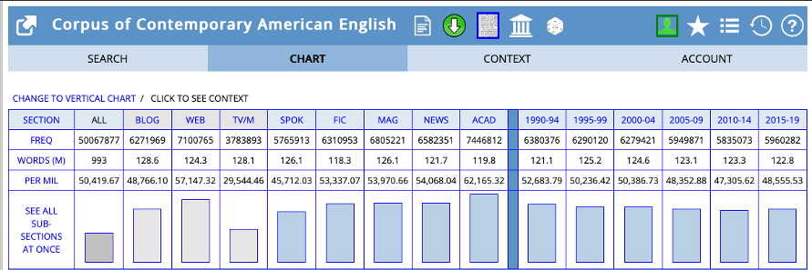
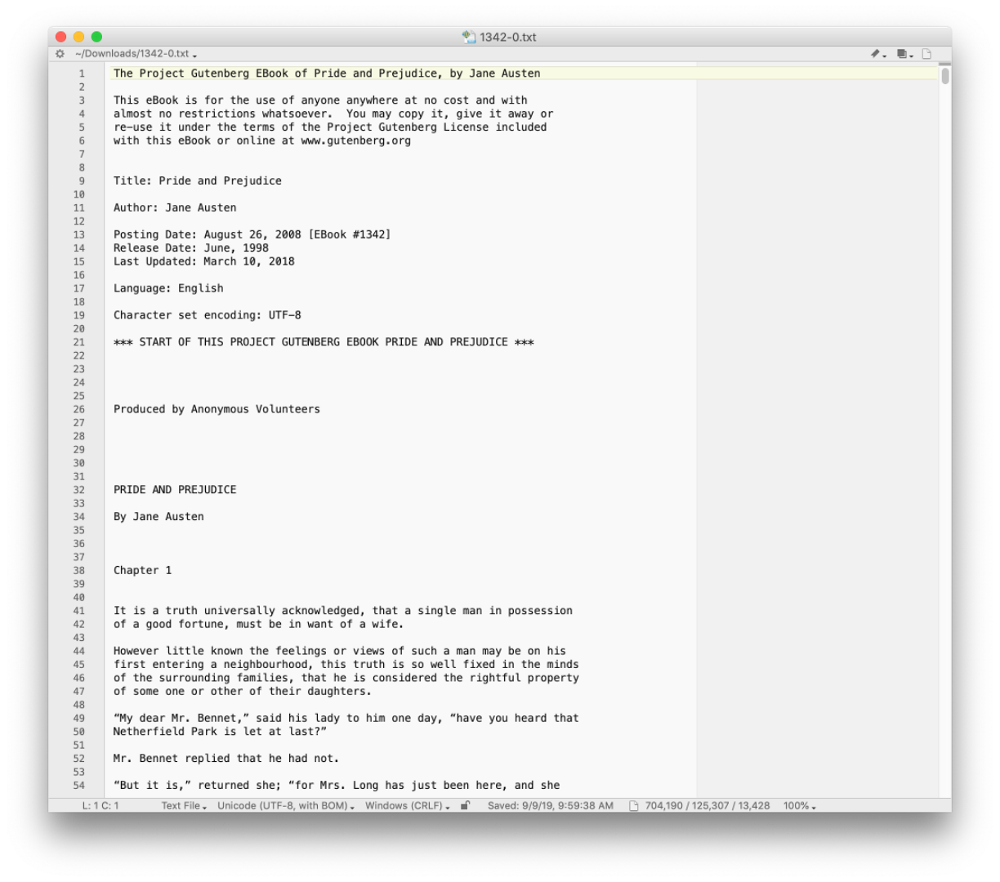
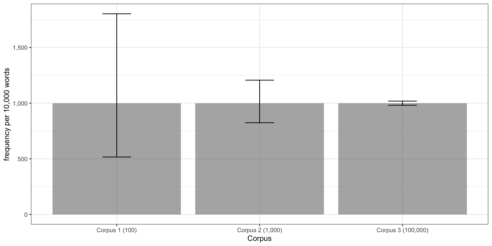
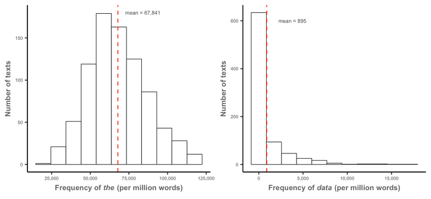
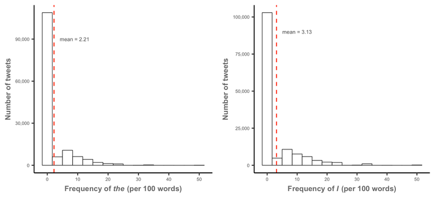
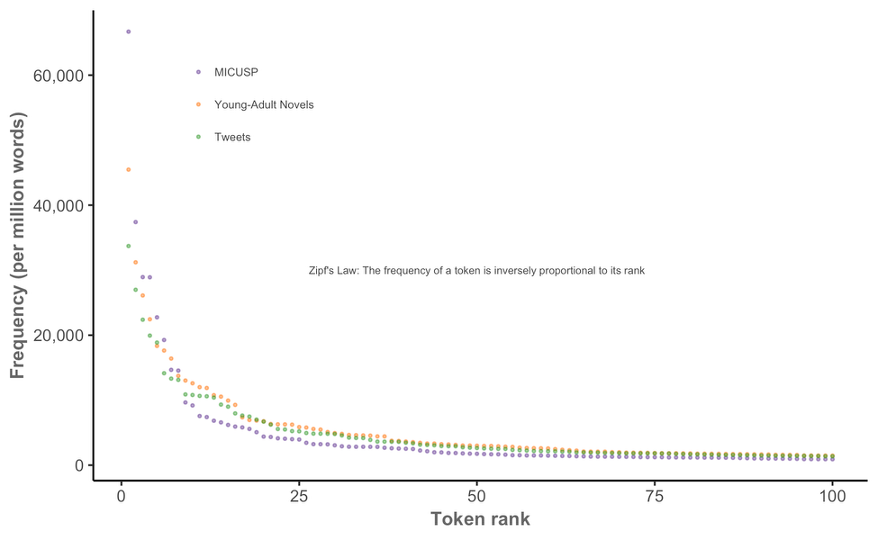

![]()
| doc_id | paper_title | paper_discipline | student_level | discipline_cat | level_cat | student_gender | speaker_status | speaker_l1 | paper_type | paper_features |
|---|---|---|---|---|---|---|---|---|---|---|
| BIO.G0.01.1 | The Ecology and Epidemiology of Plague | Biology | Final Year Undergraduate | BIO | G0 | F | NS | NA | Report | Literature review section, Reference to sources |
| BIO.G0.02.1 | Host-Parasite Interactions: On the Presumed Sympatric Speciation of Vidua | Biology | Final Year Undergraduate | BIO | G0 | M | NS | NA | Report | Tables, graphs or figures, Reference to sources |
| BIO.G0.02.2 | Sensory Drive and Speciation | Biology | Final Year Undergraduate | BIO | G0 | M | NS | NA | Report | Reference to sources |
| BIO.G0.02.3 | Plant Pollination Systems: Evolutionary Trends in Generalization and Specialization | Biology | Final Year Undergraduate | BIO | G0 | M | NS | NA | Report | Reference to sources |
| BIO.G0.02.4 | Chromosomal Rearrangements, Recombination Suppression, and Speciation: A Review of Rieseberg 2001 | Biology | Final Year Undergraduate | BIO | G0 | M | NS | NA | Report | Reference to sources |
| BIO.G0.02.5 | On the Origins of Man: Understanding the Last Two Million Years | Biology | Final Year Undergraduate | BIO | G0 | M | NS | NA | Report | Definitions, Discussion of results section, Tables, graphs or figures, Reference to sources |
| BIO.G0.02.6 | Genetic Analysis of Drosophila Melanogaster Mutants: To Determine Inheritance and Linkage Patterns | Biology | Final Year Undergraduate | BIO | G0 | M | NS | NA | ResearchPaper | Abstract, Methodology section, Discussion of results section, Tables, graphs or figures, Reference to sources |
| BIO.G0.03.1 | Lab 3: Plant Competition | Biology | Final Year Undergraduate | BIO | G0 | F | NS | NA | ResearchPaper | Discussion of results section, Tables, graphs or figures, Reference to sources |
| BIO.G0.03.2 | The Effects of Motor Oil on Aquatic Insect Predation | Biology | Final Year Undergraduate | BIO | G0 | F | NS | NA | ResearchPaper | Abstract, Methodology section, Discussion of results section, Reference to sources |
| BIO.G0.03.3 | Comparison of Hypothesis Testing in a High vs. Low-impact Journal | Biology | Final Year Undergraduate | BIO | G0 | F | NS | NA | ResearchPaper | Methodology section, Discussion of results section, Tables, graphs or figures, Reference to sources |
| BIO.G0.04.1 | Fetal Endocrine System | Biology | Final Year Undergraduate | BIO | G0 | F | NS | NA | Report | Abstract, Reference to sources |
| BIO.G0.04.2 | Drosophila Lab Report | Biology | Final Year Undergraduate | BIO | G0 | F | NS | NA | ResearchPaper | Methodology section, Discussion of results section, Tables, graphs or figures, Reference to sources |
| BIO.G0.04.3 | Conjugation Lab Report | Biology | Final Year Undergraduate | BIO | G0 | F | NS | NA | ResearchPaper | Discussion of results section, Tables, graphs or figures |
| BIO.G0.05.1 | Mn (III) TPPS4: A Metallophorphryin Used for Tumor Identification in MRI | Biology | Final Year Undergraduate | BIO | G0 | F | NS | NA | Report | Methodology section, Discussion of results section, Tables, graphs or figures, Reference to sources |
| BIO.G0.06.1 | Global Reproductive Strategies of Tursiops and Stenella (Family Delphinidae) | Biology | Final Year Undergraduate | BIO | G0 | F | NS | NA | Report | Tables, graphs or figures, Literature review section, Reference to sources |
| BIO.G0.07.1 | Complementation Between Histidine-Requiring Mutants of Saccharomyces Cerevisiae | Biology | Final Year Undergraduate | BIO | G0 | F | NS | NA | Report | Tables, graphs or figures, Methodology section, Problem-solution pattern, Discussion of results section, Reference to sources |
| BIO.G0.07.2 | Plasmid Transfer, Genetic Stability and Nisin Resistance in Lactococci | Biology | Final Year Undergraduate | BIO | G0 | F | NS | NA | ResearchPaper | Abstract, Tables, graphs or figures, Methodology section, Discussion of results section, Literature review section, Reference to sources |
| BIO.G0.07.3 | Genetic Analysis of a Mutant Strain of Drosophila Melanogaster | Biology | Final Year Undergraduate | BIO | G0 | F | NS | NA | ResearchPaper | Abstract, Methodology section, Discussion of results section, Tables, graphs or figures, Reference to sources |
| BIO.G0.08.1 | Analysis of a Mutant Strain of Drosophila | Biology | Final Year Undergraduate | BIO | G0 | F | NS | NA | ResearchPaper | Abstract, Methodology section, Discussion of results section, Tables, graphs or figures, Reference to sources |
| BIO.G0.09.1 | Nest Selection In Weaver Birds | Biology | Final Year Undergraduate | BIO | G0 | M | NS | NA | Report | Problem-solution pattern, Tables, graphs or figures, Reference to sources |
| BIO.G0.10.1 | Bacterial Conjugation and Gene Mapping in E. Coli | Biology | Final Year Undergraduate | BIO | G0 | F | NS | NA | ResearchPaper | Abstract, Tables, graphs or figures, Methodology section, Definitions, Discussion of results section |
| BIO.G0.10.2 | Drosophila Melanogaster Genetic Analysis Experiment | Biology | Final Year Undergraduate | BIO | G0 | F | NS | NA | ResearchPaper | Abstract, Methodology section, Discussion of results section, Tables, graphs or figures |
| BIO.G0.11.1 | Exploring the Molecular Responses of Arabidopsis in Hypobaric Environments: | Biology | Final Year Undergraduate | BIO | G0 | M | NS | NA | Proposal | Abstract, Discussion of results section, Reference to sources |
| BIO.G0.11.2 | Mapping of Genes in a Mutant Strain of Drosophila Melanogaster | Biology | Final Year Undergraduate | BIO | G0 | M | NS | NA | ResearchPaper | Abstract, Tables, graphs or figures, Methodology section, Definitions, Discussion of results section |
| BIO.G0.11.3 | Fungal Eye Infections Due to ReNu MoistureLoc | Biology | Final Year Undergraduate | BIO | G0 | M | NS | NA | Report | Reference to sources |
| BIO.G0.12.1 | The Effect of Initial Carbon Dioxide Concentration on the Rate of Photosynthesis in the Aquatic Plant Elodea | Biology | Final Year Undergraduate | BIO | G0 | F | NS | NA | ResearchPaper | Problem-solution pattern, Methodology section, Discussion of results section, Tables, graphs or figures, Reference to sources |
| BIO.G0.12.2 | Lab Report 2: Plant Biodiversity | Biology | Final Year Undergraduate | BIO | G0 | F | NS | NA | Report | Definitions, Discussion of results section, Reference to sources |
| BIO.G0.13.1 | Malaria Disease and Transmission | Biology | Final Year Undergraduate | BIO | G0 | F | NS | NA | Report | Definitions, Reference to sources |
| BIO.G0.14.1 | Mapping of Unknown Mutations in Drosophila Melanogaster | Biology | Final Year Undergraduate | BIO | G0 | F | NS | NA | ResearchPaper | Abstract, Methodology section, Discussion of results section, Tables, graphs or figures |
| BIO.G0.15.1 | Invading the Territory of Invasives: The Dangers of Biotic Disturbance | Biology | Final Year Undergraduate | BIO | G0 | M | NNS | Chinese | Essay | Reference to sources |
| BIO.G0.16.1 | Role of Leptin in Cardiovascular Disease | Biology | Final Year Undergraduate | BIO | G0 | M | NS | NA | Report | Definitions, Tables, graphs or figures, Reference to sources |
| BIO.G0.17.1 | Effects of Protein Deficiency on Organ Size in Mus Musculus | Biology | Final Year Undergraduate | BIO | G0 | M | NS | NA | ResearchPaper | Abstract, Methodology section, Discussion of results section, Tables, graphs or figures, Reference to sources |
| BIO.G0.18.1 | Mammal Diversification | Biology | Final Year Undergraduate | BIO | G0 | M | NS | NA | Report | Abstract, Discussion of results section, Tables, graphs or figures, Reference to sources |
| BIO.G0.19.1 | Malaria Disease and Transmission | Biology | Final Year Undergraduate | BIO | G0 | F | NS | NA | Report | NA |
| BIO.G0.20.1 | A Case for a US International Anti-Malaria Program | Biology | Final Year Undergraduate | BIO | G0 | M | NS | NA | Report | Definitions, Reference to sources |
| BIO.G0.21.1 | Prevalence of Haemosporidians in Birds of Northern Michigan | Biology | Final Year Undergraduate | BIO | G0 | F | NS | NA | ResearchPaper | Abstract, Tables, graphs or figures, Methodology section, Discussion of results section, Literature review section, Reference to sources |
| BIO.G0.22.1 | Trunk Forking in Acer Saccharum: a Phototropic Response to Forest Canopy Gaps | Biology | Final Year Undergraduate | BIO | G0 | M | NS | NA | ResearchPaper | Abstract, Methodology section, Discussion of results section, Tables, graphs or figures, Reference to sources |
| BIO.G0.23.1 | Drosophila Melanogaster lab report | Biology | Final Year Undergraduate | BIO | G0 | M | NS | NA | ResearchPaper | Abstract, Methodology section, Discussion of results section, Tables, graphs or figures |
| BIO.G0.24.1 | Varying Infectivity of Diplostomum Flexicaudum in Fish Species of Douglas Lake | Biology | Final Year Undergraduate | BIO | G0 | F | NS | NA | Report | Abstract, Discussion of results section, Methodology section, Definitions, Problem-solution pattern, Reference to sources |
| BIO.G0.25.1 | Malaria in the Twenty-first Century | Biology | Final Year Undergraduate | BIO | G0 | F | NS | NA | Report | Definitions, Reference to sources |
| BIO.G0.26.1 | Case Analysis for Jean Redhorse Osceola | Biology | Final Year Undergraduate | BIO | G0 | F | NS | NA | Report | Problem-solution pattern, Discussion of results section, Reference to sources |
| BIO.G0.27.1 | Small Mammal Response to Post-fire Forest Succession in Northern Lower Michigan | Biology | Final Year Undergraduate | BIO | G0 | F | NS | NA | ResearchPaper | Abstract, Tables, graphs or figures, Methodology section, Discussion of results section, Literature review section, Reference to sources |
| BIO.G0.28.1 | Niche Partitioning in Bats | Biology | Final Year Undergraduate | BIO | G0 | F | NS | NA | ResearchPaper | Abstract, Tables, graphs or figures, Methodology section, Discussion of results section, Literature review section, Reference to sources |
| BIO.G0.29.1 | Sexual Selection and Male Sacrifice: From Darwin until Now | Biology | Final Year Undergraduate | BIO | G0 | F | NS | NA | Report | Reference to sources |
| BIO.G0.30.1 | Assessing selection hypotheses for the CCR5-delta32 mutation in Europeans | Biology | Final Year Undergraduate | BIO | G0 | M | NS | NA | Report | Discussion of results section, Reference to sources |
| BIO.G0.31.1 | Neurobiology Disease Explanation to a Parent | Biology | Final Year Undergraduate | BIO | G0 | M | NS | NA | ResponsePaper | Reference to sources |
| BIO.G0.32.1 | Mangrove Deforestation | Biology | Final Year Undergraduate | BIO | G0 | M | NS | NA | Report | Reference to sources |
| BIO.G1.01.1 | V. Cholerae: First Steps towards a Spatially Explicit Model | Biology | First Year Graduate | BIO | G1 | M | NNS | Spanish | Proposal | Abstract, Methodology section, Reference to sources |
| BIO.G1.02.1 | Biological Significance of Modular Structures in Protein Networks | Biology | First Year Graduate | BIO | G1 | M | NNS | Chinese | ResearchPaper | Tables, graphs or figures, Methodology section, Discussion of results section, Literature review section, Reference to sources |
| BIO.G1.03.1 | Dispersal: a Review and Synthesis | Biology | First Year Graduate | BIO | G1 | F | NS | NA | Report | Discussion of results section, Reference to sources |
| BIO.G1.04.1 | The Evolution of Terrestriality: A Look at the Factors that Drove Tetrapods to Move Onto Land | Biology | First Year Graduate | BIO | G1 | M | NS | NA | Essay | Tables, graphs or figures, Literature review section, Reference to sources |
| BIO.G1.05.1 | Inferring Swimming Mode from Skeletal Proportions in Fossil Pinnipedimorphs | Biology | First Year Graduate | BIO | G1 | M | NS | NA | ResearchPaper | Methodology section, Discussion of results section, Tables, graphs or figures, Reference to sources |
| BIO.G1.06.1 | Temp effects on nitrogen mineralization | Biology | First Year Graduate | BIO | G1 | F | NS | NA | Report | Discussion of results section, Reference to sources |
| BIO.G1.07.1 | Zebrafish and PGC mis-migration | Biology | First Year Graduate | BIO | G1 | M | NNS | Chinese | Proposal | NA |
| BIO.G1.08.1 | Boc, sonic hedgehog and commissural axons | Biology | First Year Graduate | BIO | G1 | F | NNS | Chinese | Report | NA |
| BIO.G1.08.2 | Drosophila neuroblasts | Biology | First Year Graduate | BIO | G1 | F | NNS | Chinese | ResponsePaper | NA |
| BIO.G2.01.1 | Relationships and Biogeography of Antillean Cichlids | Biology | Second Year Graduate | BIO | G2 | M | NS | NA | ResearchPaper | Abstract, Methodology section, Discussion of results section, Literature review section, Reference to sources |
| BIO.G2.02.1 | Modularity and the Evolution of Complex Systems | Biology | Second Year Graduate | BIO | G2 | F | NS | NA | Report | Reference to sources |
| BIO.G2.03.1 | Cholera Seasonality, Rainfall, and Fadeouts: a Geostatistical Approach | Biology | Second Year Graduate | BIO | G2 | M | NNS | Spanish | ResearchPaper | Methodology section, Discussion of results section, Tables, graphs or figures, Reference to sources |
| BIO.G2.04.1 | Polyphyly of the Old World Vultures and Phylogenetic Placement of Gypohierax Angolensis (Aves: Accipitridae) Inferred from Mitochondrial DNA | Biology | Second Year Graduate | BIO | G2 | F | NS | NA | ResearchPaper | Methodology section, Discussion of results section, Literature review section, Reference to sources |
| BIO.G2.05.1 | Application of Microarray Analysis in Drosophila | Biology | Second Year Graduate | BIO | G2 | M | NNS | Chinese | Report | Literature review section, Reference to sources |
| BIO.G2.05.2 | Assignment: Subcellular Protein Localization | Biology | Second Year Graduate | BIO | G2 | M | NNS | Chinese | Report | Definitions, Methodology section, Tables, graphs or figures, Discussion of results section |
| BIO.G2.06.1 | A Conserved Role of Cas-Spg System in Endoderm Specification during Early Vertebrate Development | Biology | Second Year Graduate | BIO | G2 | F | NNS | Chinese | Proposal | Methodology section, Problem-solution pattern, Discussion of results section, Reference to sources |
| BIO.G2.07.1 | Biofuels and Biodiversity | Biology | Second Year Graduate | BIO | G2 | M | NS | NA | Report | Definitions, Problem-solution pattern, Reference to sources |
| BIO.G3.01.1 | Do Programming-Oriented Environments Provide Favorable Growing Conditions for Hypotheses? | Biology | Third Year Graduate | BIO | G3 | M | NS | NA | ResearchPaper | Methodology section, Discussion of results section, Tables, graphs or figures, Reference to sources |
| BIO.G3.02.1 | Linking scales to understand diversity | Biology | Third Year Graduate | BIO | G3 | F | NS | NA | Proposal | Definitions, Literature review section, Reference to sources |
| BIO.G3.03.1 | Intracellular Electric Field Sensing using Nano-sized Voltmeters | Biology | Third Year Graduate | BIO | G3 | F | NS | NA | Essay | NA |
| CEE.G0.01.1 | Mix Proportioning and Fresh Concrete Properties | Civil and Environmental Engineering | Final Year Undergraduate | CEE | G0 | M | NS | NA | Report | Methodology section, Discussion of results section, Tables, graphs or figures |
| CEE.G0.01.2 | Self-Compacting Concrete and Fresh Concrete Properties | Civil and Environmental Engineering | Final Year Undergraduate | CEE | G0 | M | NS | NA | ResearchPaper | Methodology section, Discussion of results section, Tables, graphs or figures, Reference to sources |
| CEE.G0.01.3 | Gradation Analysis and Permeability Tests | Civil and Environmental Engineering | Final Year Undergraduate | CEE | G0 | M | NS | NA | ResearchPaper | Methodology section, Tables, graphs or figures, Discussion of results section |
| CEE.G0.02.1 | Assessment of Candidate Michigan Aggregate | Civil and Environmental Engineering | Final Year Undergraduate | CEE | G0 | M | NS | NA | Report | Methodology section, Discussion of results section, Tables, graphs or figures |
| CEE.G0.03.1 | Glacier Way Dam Site Soils Evaluation | Civil and Environmental Engineering | Final Year Undergraduate | CEE | G0 | M | NS | NA | ResearchPaper | Discussion of results section, Methodology section, Problem-solution pattern |
| CEE.G0.04.1 | Gradation Analyses and Permeability Tests for Glacier Way dam project | Civil and Environmental Engineering | Final Year Undergraduate | CEE | G0 | M | NS | NA | ResearchPaper | Methodology section, Discussion of results section, Tables, graphs or figures |
| CEE.G0.05.1 | Relative density testing for foundation soil of punch presses | Civil and Environmental Engineering | Final Year Undergraduate | CEE | G0 | F | NS | NA | ResearchPaper | Methodology section, Discussion of results section, Tables, graphs or figures |
| CEE.G0.05.2 | Design development for the Wight-Green Building | Civil and Environmental Engineering | Final Year Undergraduate | CEE | G0 | F | NS | NA | Report | NA |
| CEE.G0.05.3 | Schematic design of the Wight-Green Building | Civil and Environmental Engineering | Final Year Undergraduate | CEE | G0 | F | NS | NA | Report | NA |
| CEE.G0.06.1 | Characteristics of Concrete Aggregates | Civil and Environmental Engineering | Final Year Undergraduate | CEE | G0 | F | NS | NA | ResearchPaper | Methodology section, Discussion of results section, Tables, graphs or figures |
| CEE.G1.01.1 | Oral Bioavailability Evaluation of Soil-Borne Chemicals Using In Vitro Bioavailability Tests | Civil and Environmental Engineering | First Year Graduate | CEE | G1 | M | NS | NA | Report | Abstract, Tables, graphs or figures, Literature review section, Reference to sources |
| CEE.G1.02.1 | Necking and Localization in Plane Stress / Strain | Civil and Environmental Engineering | First Year Graduate | CEE | G1 | M | NNS | Spanish | ResearchPaper | Methodology section, Discussion of results section, Tables, graphs or figures, Reference to sources |
| CEE.G1.02.2 | Self-Centering Seismic Resistant Systems | Civil and Environmental Engineering | First Year Graduate | CEE | G1 | M | NNS | Spanish | Report | Tables, graphs or figures, Reference to sources |
| CEE.G1.02.3 | Seismic Retrofit for Reinforced Concrete Structures: Analysis / Design Techniques | Civil and Environmental Engineering | First Year Graduate | CEE | G1 | M | NNS | Spanish | Report | Abstract, Discussion of results section, Reference to sources |
| CEE.G1.03.1 | Dundee Wastewater Treatment Plant: a Brief Examination | Civil and Environmental Engineering | First Year Graduate | CEE | G1 | F | NS | NA | Report | Discussion of results section, Tables, graphs or figures, Reference to sources |
| CEE.G1.04.1 | Use of Reinforced Concrete Shear Walls in Steel Framed Buildings | Civil and Environmental Engineering | First Year Graduate | CEE | G1 | M | NS | NA | Report | Methodology section, Tables, graphs or figures, Reference to sources |
| CEE.G1.05.1 | Analysis and Design of Composite Steel-Concrete Columns | Civil and Environmental Engineering | First Year Graduate | CEE | G1 | M | NS | NA | Report | Definitions, Abstract, Tables, graphs or figures, Reference to sources |
| CEE.G1.06.1 | Worker Ergonomic Analysis | Civil and Environmental Engineering | First Year Graduate | CEE | G1 | M | NS | NA | Report | Tables, graphs or figures |
| CEE.G1.07.1 | Reinforced Concrete Design Term Project | Civil and Environmental Engineering | First Year Graduate | CEE | G1 | M | NS | NA | Report | Abstract, Literature review section, Tables, graphs or figures, Problem-solution pattern, Reference to sources |
| CEE.G1.07.2 | The State of Finite Element Modeling of Fiber Reinforced Cement Composites | Civil and Environmental Engineering | First Year Graduate | CEE | G1 | M | NS | NA | Report | Abstract, Reference to sources |
| CEE.G1.08.1 | Electrification of road transportation using ground level power supply | Civil and Environmental Engineering | First Year Graduate | CEE | G1 | M | NNS | Malayalam | Critique | Abstract, Tables, graphs or figures, Problem-solution pattern, Methodology section, Definitions, Discussion of results section |
| CEE.G1.09.1 | Durability of Reinforced Concrete | Civil and Environmental Engineering | First Year Graduate | CEE | G1 | M | NS | NA | Report | NA |
| CEE.G1.10.1 | Seismic Design For Tunnels and Underground Infrastructure | Civil and Environmental Engineering | First Year Graduate | CEE | G1 | M | NS | NA | Report | Abstract, Tables, graphs or figures, Reference to sources |
| CEE.G1.10.2 | Soil Improvement: Designing with Tensar Geogrids | Civil and Environmental Engineering | First Year Graduate | CEE | G1 | M | NS | NA | Report | Abstract, Methodology section, Discussion of results section, Tables, graphs or figures, Reference to sources |
| CEE.G2.01.1 | Sustainability of the Internal Combustion Engine | Civil and Environmental Engineering | Second Year Graduate | CEE | G2 | M | NS | NA | Report | Abstract, Tables, graphs or figures, Reference to sources |
| CEE.G3.01.1 | A Study on an Interaction of Copper-Binding Compounds Between Methanotrophs | Civil and Environmental Engineering | Third Year Graduate | CEE | G3 | M | NNS | Korean | ResearchPaper | Methodology section, Discussion of results section, Reference to sources |
| CEE.G3.02.1 | Project: Computation of Deformation | Civil and Environmental Engineering | Third Year Graduate | CEE | G3 | M | NNS | Mandarin | ResearchPaper | Tables, graphs or figures |
| CEE.G3.03.1 | Contaminant Transport in Constructed Wetlands for Urban Stormwater Management | Civil and Environmental Engineering | Third Year Graduate | CEE | G3 | F | NS | NA | ResearchPaper | Definitions, Abstract, Tables, graphs or figures, Reference to sources |
| CEE.G3.04.1 | Managing CAFOs: Regulatory and Grassroots Control | Civil and Environmental Engineering | Third Year Graduate | CEE | G3 | M | NS | NA | Report | Reference to sources |
| CEE.G3.04.2 | International Law and Environmental Policy | Civil and Environmental Engineering | Third Year Graduate | CEE | G3 | M | NS | NA | Report | Definitions, Literature review section, Reference to sources |
| CEE.G3.04.3 | Dish-Washing as a Multi-Actor Prisoner's Dilemma | Civil and Environmental Engineering | Third Year Graduate | CEE | G3 | M | NS | NA | Essay | Tables, graphs or figures |
| CLS.G0.01.1 | Comparison of Persian and Assyrian Kings | Classical Studies | Final Year Undergraduate | CLS | G0 | F | NS | NA | Report | Reference to sources |
| CLS.G0.02.1 | Augustine Anatomized | Classical Studies | Final Year Undergraduate | CLS | G0 | F | NS | NA | Essay | Reference to sources |
| CLS.G0.03.1 | Regarding the Public Image of the Emperor Augustus | Classical Studies | Final Year Undergraduate | CLS | G0 | M | NS | NA | Report | NA |
| CLS.G0.04.1 | Circe's portrayal as a witch in the Odyssey | Classical Studies | Final Year Undergraduate | CLS | G0 | F | NS | NA | ResponsePaper | NA |
| CLS.G0.04.2 | Analysis of the Oresteia | Classical Studies | Final Year Undergraduate | CLS | G0 | F | NS | NA | Essay | Reference to sources |
| CLS.G0.05.1 | The Importance of Germanicus to the Roman Empire | Classical Studies | Final Year Undergraduate | CLS | G0 | F | NS | NA | Report | NA |
| CLS.G0.06.1 | Analysis of the Parthenon Frieze | Classical Studies | Final Year Undergraduate | CLS | G0 | F | NS | NA | Essay | NA |
| CLS.G1.01.1 | Plato and Hellenistic Poetics: A Study of Narratological Framing | Classical Studies | First Year Graduate | CLS | G1 | M | NS | NA | Essay | Reference to sources |
| CLS.G1.02.1 | Academic Ambitions: Cicero, the Persona of the Philosopher, and Roman Elite Status | Classical Studies | First Year Graduate | CLS | G1 | M | NS | NA | Report | Reference to sources |
| CLS.G1.03.1 | The Role of Roman manus Marriage in the Institution of Classical Free Marriage | Classical Studies | First Year Graduate | CLS | G1 | F | NS | NA | Report | Reference to sources |
| CLS.G1.04.1 | The Bellum Hispaniense as a Face of Battle Narrative | Classical Studies | First Year Graduate | CLS | G1 | M | NS | NA | Essay | Reference to sources |
| CLS.G2.01.1 | The Nightmare of Arcady | Classical Studies | Second Year Graduate | CLS | G2 | M | NS | NA | Essay | Reference to sources |
| CLS.G2.02.1 | Platonic Thought in Book I of Livy's Ab Urbe Condita | Classical Studies | Second Year Graduate | CLS | G2 | M | NS | NA | Essay | Reference to sources |
| CLS.G3.01.1 | Corpse Demons in Ancient Greek Magic | Classical Studies | Third Year Graduate | CLS | G3 | F | NS | NA | Essay | Tables, graphs or figures, Reference to sources |
| ECO.G0.01.1 | Article Review: My Anti-Stump Speech | Economics | Final Year Undergraduate | ECO | G0 | M | NNS | Mandarin | Report | Tables, graphs or figures |
| ECO.G0.02.1 | Analysis of the Microsoft Case | Economics | Final Year Undergraduate | ECO | G0 | F | NS | NA | Report | NA |
| ECO.G0.02.2 | The Lysine Cartel and Collusion Theory | Economics | Final Year Undergraduate | ECO | G0 | F | NS | NA | Report | Abstract, Reference to sources |
| ECO.G0.03.1 | Economics of the Illicit-Drug Market | Economics | Final Year Undergraduate | ECO | G0 | M | NS | NA | Essay | Reference to sources |
| ECO.G0.04.1 | FTC Approves Rocket Joint Venture | Economics | Final Year Undergraduate | ECO | G0 | M | NNS | Russian | Report | Reference to sources |
| ECO.G0.04.2 | Killing Labor with Kindness: The Road to Hell is Paved with Good Intentions | Economics | Final Year Undergraduate | ECO | G0 | M | NNS | Russian | Critique | Reference to sources |
| ECO.G0.06.1 | Family Size and Educational Attainment in Costa Rica | Economics | Final Year Undergraduate | ECO | G0 | F | NS | NA | ResearchPaper | Methodology section, Discussion of results section, Tables, graphs or figures, Reference to sources |
| ECO.G0.07.1 | U.S. Health Insurance | Economics | Final Year Undergraduate | ECO | G0 | F | NS | NA | Report | Reference to sources |
| ECO.G0.08.1 | Transportation Costs and the Non-Agricultural Sector in 19th Century Brazil | Economics | Final Year Undergraduate | ECO | G0 | M | NS | NA | ResearchPaper | Literature review section, Discussion of results section, Tables, graphs or figures, Reference to sources |
| ECO.G1.01.1 | Pooled Signals: The Effect of Competitive Admissions Processes on College Choice | Economics | First Year Graduate | ECO | G1 | M | NS | NA | ResearchPaper | Abstract, Methodology section, Discussion of results section, Tables, graphs or figures, Reference to sources |
| ECO.G1.02.1 | Correlation between Straits Times Industrial Index (STI) with Other Key Financial Stock Indexes | Economics | First Year Graduate | ECO | G1 | F | NS | NA | ResearchPaper | Abstract, Methodology section, Tables, graphs or figures, Discussion of results section, Reference to sources |
| ECO.G1.02.2 | Malaysia and 1997 Asian Financial Crisis | Economics | First Year Graduate | ECO | G1 | F | NS | NA | Report | Reference to sources |
| ECO.G1.03.1 | What Drives the Relationship between Education and Fertility? | Economics | First Year Graduate | ECO | G1 | F | NNS | Chinese | ResearchPaper | Abstract, Tables, graphs or figures, Discussion of results section, Methodology section, Problem-solution pattern, Literature review section, Reference to sources |
| ECO.G2.01.1 | Capital Flows and the Role of Institutions | Economics | Second Year Graduate | ECO | G2 | F | NNS | German, Mandarin | ResearchPaper | Literature review section, Discussion of results section, Tables, graphs or figures, Reference to sources |
| ECO.G2.02.1 | Evasion Technologies and Optimal Audits | Economics | Second Year Graduate | ECO | G2 | M | NS | NA | Report | Definitions, Tables, graphs or figures, Methodology section, Literature review section, Reference to sources |
| ECO.G2.03.1 | Debt and Labor Supply | Economics | Second Year Graduate | ECO | G2 | M | NS | NA | Report | Reference to sources |
| ECO.G2.04.1 | Asymmetric Stock Price Response to Firms' Earnings Announcements | Economics | Second Year Graduate | ECO | G2 | M | NNS | Korean | ResearchPaper | Abstract, Tables, graphs or figures, Methodology section, Definitions, Discussion of results section, Literature review section, Reference to sources |
| ECO.G2.05.1 | Outsourcing Clerical Jobs, an Exploratory Analysis | Economics | Second Year Graduate | ECO | G2 | F | NS | NA | ResearchPaper | Problem-solution pattern, Tables, graphs or figures, Reference to sources |
| ECO.G2.06.1 | Optimal wage contracting with tax avoidance | Economics | Second Year Graduate | ECO | G2 | M | NNS | Russian | Proposal | NA |
| ECO.G2.07.1 | Shotgun marriages in the US | Economics | Second Year Graduate | ECO | G2 | F | NS | NA | Proposal | NA |
| ECO.G2.07.2 | Myth and Reality of Flat Tax Reform in Russia | Economics | Second Year Graduate | ECO | G2 | F | NS | NA | ResponsePaper | NA |
| ECO.G2.07.3 | Decentralization and water pollution | Economics | Second Year Graduate | ECO | G2 | F | NS | NA | Critique | NA |
| ECO.G2.08.1 | Referee Report for a Job Market Paper in International Finance | Economics | Second Year Graduate | ECO | G2 | M | NNS | Turkish | ResearchPaper | NA |
| ECO.G3.01.1 | A Model of the Discrepancy between Corporate Income Tax Report and Output Announcements | Economics | Third Year Graduate | ECO | G3 | F | NNS | Korean | ResearchPaper | Abstract, Tables, graphs or figures, Discussion of results section, Methodology section, Problem-solution pattern, Reference to sources |
| ECO.G3.02.1 | On the Covariance Structure of Changes in Consumption in the Health and Retirement | Economics | Third Year Graduate | ECO | G3 | M | NS | NA | ResearchPaper | Abstract, Methodology section, Discussion of results section, Tables, graphs or figures, Reference to sources |
| EDU.G0.01.1 | Learning In Economics | Education | Final Year Undergraduate | EDU | G0 | M | NS | NA | Report | NA |
| EDU.G0.02.1 | Lesson plan evaluation | Education | Final Year Undergraduate | EDU | G0 | F | NS | NA | ResponsePaper | NA |
| EDU.G0.03.1 | School Study: Abbott Middle School | Education | Final Year Undergraduate | EDU | G0 | F | NS | NA | Report | Reference to sources |
| EDU.G0.04.1 | Observations from interview with math student | Education | Final Year Undergraduate | EDU | G0 | F | NS | NA | ResponsePaper | Discussion of results section, Reference to sources |
| EDU.G0.05.1 | 5th Grade Science Lesson | Education | Final Year Undergraduate | EDU | G0 | F | NS | NA | Report | NA |
| EDU.G0.06.1 | Analysis of student discussions (5th grade) | Education | Final Year Undergraduate | EDU | G0 | F | NS | NA | Report | NA |
| EDU.G0.06.2 | Learning and Professional Growth | Education | Final Year Undergraduate | EDU | G0 | F | NS | NA | ResponsePaper | NA |
| EDU.G0.06.3 | Lesson plan: Pepper, Spoons, and Static Electricity | Education | Final Year Undergraduate | EDU | G0 | F | NS | NA | Proposal | Problem-solution pattern, Tables, graphs or figures |
| EDU.G0.07.1 | Personal Reflection of a Learning Difficulty | Education | Final Year Undergraduate | EDU | G0 | F | NS | NA | Report | NA |
| EDU.G0.08.1 | Jim Colbert Final Paper | Education | Final Year Undergraduate | EDU | G0 | F | NS | NA | Essay | NA |
| EDU.G0.09.1 | Classroom study: Abbott Middle School | Education | Final Year Undergraduate | EDU | G0 | F | NS | NA | Report | Reference to sources |
| EDU.G0.10.1 | Analysis of 7 UP video | Education | Final Year Undergraduate | EDU | G0 | F | NS | NA | Report | NA |
| EDU.G0.11.1 | Student development report: Willow Run High School | Education | Final Year Undergraduate | EDU | G0 | F | NS | NA | Report | NA |
| EDU.G0.12.1 | Abbott Middle School Analysis | Education | Final Year Undergraduate | EDU | G0 | M | NS | NA | Report | NA |
| EDU.G0.13.1 | Teaching in the Field Reflection | Education | Final Year Undergraduate | EDU | G0 | F | NS | NA | Report | Tables, graphs or figures |
| EDU.G0.14.1 | Math methods final reflection | Education | Final Year Undergraduate | EDU | G0 | F | NS | NA | ResponsePaper | NA |
| EDU.G0.15.1 | Classroom study: Latin | Education | Final Year Undergraduate | EDU | G0 | F | NNS | Russian | Report | Reference to sources |
| EDU.G0.16.1 | Lesson reflection (class on cloud types) | Education | Final Year Undergraduate | EDU | G0 | F | NS | NA | ResponsePaper | NA |
| EDU.G0.17.1 | Reflection on teaching experience from perspective of Educational Psychology | Education | Final Year Undergraduate | EDU | G0 | F | NS | NA | Report | Definitions |
| EDU.G0.19.1 | Strategies for Learning Grammar and Vocabulary | Education | Final Year Undergraduate | EDU | G0 | F | NS | NA | Critique | Reference to sources |
| EDU.G0.20.1 | 1st grade teaching report | Education | Final Year Undergraduate | EDU | G0 | M | NS | NA | ResponsePaper | NA |
| EDU.G1.01.1 | Perspective on Textual Production, Student Collaboration, and Social Networking Sites | Education | First Year Graduate | EDU | G1 | M | NS | NA | Proposal | Methodology section, Problem-solution pattern, Literature review section, Reference to sources |
| EDU.G1.03.1 | Access to graduate education among women of color | Education | First Year Graduate | EDU | G1 | F | NS | NA | ResearchPaper | Tables, graphs or figures, Discussion of results section, Definitions, Problem-solution pattern, Literature review section, Reference to sources |
| EDU.G1.04.1 | Engaging Commuters in the Teaching and Learning Environment | Education | First Year Graduate | EDU | G1 | F | NS | NA | Report | Literature review section, Reference to sources |
| EDU.G1.05.1 | International Student Adjustment | Education | First Year Graduate | EDU | G1 | F | NNS | Korean | ResearchPaper | Methodology section, Discussion of results section, Literature review section, Reference to sources |
| EDU.G1.06.1 | Lesson Adaptation Paper for Special Needs Student | Education | First Year Graduate | EDU | G1 | F | NS | NA | Report | NA |
| EDU.G1.07.1 | Proficiency, Differentiation, and Universal Education | Education | First Year Graduate | EDU | G1 | M | NS | NA | Critique | Reference to sources |
| EDU.G1.08.1 | Higher education benefits | Education | First Year Graduate | EDU | G1 | F | NS | NA | Report | Reference to sources |
| EDU.G1.09.1 | A Critique of the Spellings Report | Education | First Year Graduate | EDU | G1 | F | NS | NA | Critique | Problem-solution pattern, Reference to sources |
| EDU.G1.10.1 | Separatism, Americanization, and Catholic Schools | Education | First Year Graduate | EDU | G1 | M | NS | NA | Report | Reference to sources |
| EDU.G1.11.1 | Rethinking Academic Writing About Sexualized Violence | Education | First Year Graduate | EDU | G1 | F | NS | NA | Proposal | Discussion of results section, Methodology section, Problem-solution pattern, Literature review section, Reference to sources |
| EDU.G1.12.1 | Professional Development for Child Care Providers | Education | First Year Graduate | EDU | G1 | F | NS | NA | Report | Methodology section, Discussion of results section, Literature review section, Reference to sources |
| EDU.G2.01.1 | The Economics of Philippine Education | Education | Second Year Graduate | EDU | G2 | M | NNS | Chinese, Tagalog | Report | Tables, graphs or figures, Reference to sources |
| EDU.G2.01.2 | Language, Literacy, and Policy | Education | Second Year Graduate | EDU | G2 | M | NNS | Chinese, Tagalog | Report | Problem-solution pattern, Tables, graphs or figures, Reference to sources |
| EDU.G2.02.1 | Student Informed Reform | Education | Second Year Graduate | EDU | G2 | F | NS | NA | Essay | Reference to sources |
| EDU.G2.03.1 | Diversifying Communities of Practice in Higher Education | Education | Second Year Graduate | EDU | G2 | F | NS | NA | Essay | Reference to sources |
| EDU.G2.04.1 | Beyond Cognitive Skills to Enactment in Sociocultural Contexts | Education | Second Year Graduate | EDU | G2 | F | NS | NA | Critique | Reference to sources |
| EDU.G3.01.1 | Schools and the development of national identity in young children: A justification for comparison | Education | Third Year Graduate | EDU | G3 | F | NS | NA | Proposal | Definitions, Tables, graphs or figures, Reference to sources |
| EDU.G3.03.1 | The History of American Education: Two Viewpoints | Education | Third Year Graduate | EDU | G3 | F | NS | NA | Report | Reference to sources |
| EDU.G3.03.2 | The Intentions of the Progressive Reformers: Good or Bad? | Education | Third Year Graduate | EDU | G3 | F | NS | NA | Report | Reference to sources |
| EDU.G3.03.3 | American Education: A Force for Democracy and Integration? | Education | Third Year Graduate | EDU | G3 | F | NS | NA | Essay | Reference to sources |
| EDU.G3.03.4 | The Unintended Consequences of Reform | Education | Third Year Graduate | EDU | G3 | F | NS | NA | Report | NA |
| EDU.G3.03.5 | Immigration and Americanization: Then and Now | Education | Third Year Graduate | EDU | G3 | F | NS | NA | Report | NA |
| EDU.G3.03.6 | Curriculum Changes in the Progressive Era and Great Depression | Education | Third Year Graduate | EDU | G3 | F | NS | NA | Report | Reference to sources |
| EDU.G3.03.7 | A Turbulent Decade in the Lives of Three American Families | Education | Third Year Graduate | EDU | G3 | F | NS | NA | Report | Reference to sources |
| EDU.G3.04.1 | Growing Trend of Part-time Faculty at Community Colleges | Education | Third Year Graduate | EDU | G3 | F | NS | NA | Report | Definitions, Tables, graphs or figures, Literature review section, Reference to sources |
| ENG.G0.01.1 | Woolf's Women | English | Final Year Undergraduate | ENG | G0 | F | NS | NA | Report | Reference to sources |
| ENG.G0.01.2 | Douglas's Declaration | English | Final Year Undergraduate | ENG | G0 | F | NS | NA | Report | Reference to sources |
| ENG.G0.02.1 | The Vicar of Wakefield as a Failed Morality Story | English | Final Year Undergraduate | ENG | G0 | F | NS | NA | Essay | Reference to sources |
| ENG.G0.03.1 | HIV-AIDS Funding | English | Final Year Undergraduate | ENG | G0 | F | NS | NA | Essay | Reference to sources |
| ENG.G0.03.2 | William Faulkner's As I Lay Dying | English | Final Year Undergraduate | ENG | G0 | F | NS | NA | Essay | Reference to sources |
| ENG.G0.04.1 | The Absolute Necessity of College Level Writing Courses | English | Final Year Undergraduate | ENG | G0 | F | NS | NA | Essay | Definitions, Reference to sources |
| ENG.G0.05.1 | People or Property? | English | Final Year Undergraduate | ENG | G0 | F | NS | NA | Essay | Reference to sources |
| ENG.G0.06.1 | My Life Is Not a Movie Starring Michelle Pfeiffer or Hilary Swank | English | Final Year Undergraduate | ENG | G0 | F | NS | NA | CreativeWriting | NA |
| ENG.G0.06.2 | A (Solitary) Place For Fantasy in Reality | English | Final Year Undergraduate | ENG | G0 | F | NS | NA | Essay | Reference to sources |
| ENG.G0.06.3 | Human-Animal Nature in H.G. Wells and Edgar Allen Poe | English | Final Year Undergraduate | ENG | G0 | F | NS | NA | Essay | Reference to sources |
| ENG.G0.07.1 | Effects of digital age on children's literature | English | Final Year Undergraduate | ENG | G0 | F | NS | NA | Essay | Reference to sources |
| ENG.G0.09.2 | Historical Places, Violent Spaces: | English | Final Year Undergraduate | ENG | G0 | F | NS | NA | Essay | Reference to sources |
| ENG.G0.10.1 | Close Reading Paper: The Tempest (4.1.146-163) | English | Final Year Undergraduate | ENG | G0 | M | NS | NA | Report | NA |
| ENG.G0.11.1 | Bloom & Martha: Are You Not Happy in Your Home? | English | Final Year Undergraduate | ENG | G0 | F | NS | NA | Essay | NA |
| ENG.G0.12.1 | Women in Beowulf | English | Final Year Undergraduate | ENG | G0 | F | NS | NA | Essay | Reference to sources |
| ENG.G0.13.1 | The Love Covenant | English | Final Year Undergraduate | ENG | G0 | F | NS | NA | Essay | NA |
| ENG.G0.13.2 | Abraham Drafted to Team Galatians | English | Final Year Undergraduate | ENG | G0 | F | NS | NA | Report | NA |
| ENG.G0.14.1 | James Joyce: A Portrait of the Artist as a Young Man | English | Final Year Undergraduate | ENG | G0 | F | NS | NA | Essay | NA |
| ENG.G0.15.1 | Anna Karenina | English | Final Year Undergraduate | ENG | G0 | M | NS | NA | Essay | Reference to sources |
| ENG.G0.16.1 | Humans and Animals in the Book of Genesis | English | Final Year Undergraduate | ENG | G0 | M | NS | NA | Report | Definitions, Reference to sources |
| ENG.G0.17.1 | The Grey Zone of Shame | English | Final Year Undergraduate | ENG | G0 | M | NS | NA | Essay | Reference to sources |
| ENG.G0.17.2 | Survival in Auschwitz: Irony, Reality, and Power | English | Final Year Undergraduate | ENG | G0 | M | NS | NA | Report | Reference to sources |
| ENG.G0.18.1 | Individuality and Isolation in Moll Flanders | English | Final Year Undergraduate | ENG | G0 | F | NNS | Mandarin Chinese | Essay | Reference to sources |
| ENG.G0.18.2 | Frames and Resistance in Pride and Prejudice | English | Final Year Undergraduate | ENG | G0 | F | NNS | Mandarin Chinese | Essay | Reference to sources |
| ENG.G0.18.3 | Satire and Morality in the Vicar of Wakefield | English | Final Year Undergraduate | ENG | G0 | F | NNS | Mandarin Chinese | Essay | Reference to sources |
| ENG.G0.18.4 | The Space of Dreams in The Age of Innocence | English | Final Year Undergraduate | ENG | G0 | F | NNS | Mandarin Chinese | Essay | Reference to sources |
| ENG.G0.19.1 | A compare and contrast paper using two texts from a Science Fiction course | English | Final Year Undergraduate | ENG | G0 | F | NS | NA | Report | NA |
| ENG.G0.19.2 | Paper on Invisible Man for an American Lit course | English | Final Year Undergraduate | ENG | G0 | F | NS | NA | Essay | Reference to sources |
| ENG.G0.20.1 | Autonomy in Robinson Crusoe | English | Final Year Undergraduate | ENG | G0 | M | NS | NA | Essay | Reference to sources |
| ENG.G0.21.1 | Elevated Language in Beowulf | English | Final Year Undergraduate | ENG | G0 | M | NS | NA | Essay | NA |
| ENG.G0.22.1 | Autumnal Imagery in Austen's Persuasion | English | Final Year Undergraduate | ENG | G0 | F | NS | NA | Essay | NA |
| ENG.G0.22.2 | Chaucer's The Franklin's Tale and Boccaccio's Il Filocolo | English | Final Year Undergraduate | ENG | G0 | F | NS | NA | Report | Reference to sources |
| ENG.G0.23.1 | Milton's Relativism | English | Final Year Undergraduate | ENG | G0 | F | NS | NA | Essay | NA |
| ENG.G0.24.1 | Contradiction and Religious Critique: The Pardoner in The Canterbury Tales | English | Final Year Undergraduate | ENG | G0 | F | NS | NA | Essay | Reference to sources |
| ENG.G0.25.1 | Sexualized Violence and Identity in Achy Obejas' Memory Mambo | English | Final Year Undergraduate | ENG | G0 | F | NS | NA | Essay | Reference to sources |
| ENG.G0.26.1 | Autoethnography | English | Final Year Undergraduate | ENG | G0 | F | NS | NA | CreativeWriting | Reference to sources |
| ENG.G0.26.2 | Comparison of Hermia in A Midsummer Night's Dream and Jessica in TheMerchant of Venice | English | Final Year Undergraduate | ENG | G0 | F | NS | NA | Essay | Definitions, Reference to sources |
| ENG.G0.27.1 | The Representation of Jesus and Women in the Gospel of Mark | English | Final Year Undergraduate | ENG | G0 | F | NS | NA | Essay | Reference to sources |
| ENG.G0.28.1 | Bloom the Critic in Joyce's Ulysses | English | Final Year Undergraduate | ENG | G0 | M | NS | NA | Essay | Tables, graphs or figures, Reference to sources |
| ENG.G0.29.1 | Good People Breaking Rules | English | Final Year Undergraduate | ENG | G0 | M | NS | NA | Essay | Definitions, Reference to sources |
| ENG.G0.30.1 | SIgnificance of Menstruation in Joyce's Ulysses | English | Final Year Undergraduate | ENG | G0 | F | NS | NA | Critique | NA |
| ENG.G0.31.1 | Cursed Inheritances in Go Down, Moses | English | Final Year Undergraduate | ENG | G0 | F | NS | NA | Report | Reference to sources |
| ENG.G0.31.2 | Jack Zipes and Fairy Tales | English | Final Year Undergraduate | ENG | G0 | F | NS | NA | Report | Definitions, Reference to sources |
| ENG.G0.32.1 | Slavery in Robinson Crusoe | English | Final Year Undergraduate | ENG | G0 | M | NS | NA | Essay | Reference to sources |
| ENG.G0.33.1 | Limited Recovery: Trauma in Obejas' Cuban America | English | Final Year Undergraduate | ENG | G0 | M | NS | NA | Report | NA |
| ENG.G0.34.1 | The Law of Love | English | Final Year Undergraduate | ENG | G0 | M | NS | NA | Essay | Reference to sources |
| ENG.G0.34.2 | The Words of Love Between Us: The Covenant in Hosea | English | Final Year Undergraduate | ENG | G0 | M | NS | NA | Report | Reference to sources |
| ENG.G0.34.3 | Names of God and Man | English | Final Year Undergraduate | ENG | G0 | M | NS | NA | Report | Reference to sources |
| ENG.G0.35.1 | Less is More: Courtship in Twelfth Night | English | Final Year Undergraduate | ENG | G0 | F | NS | NA | Essay | NA |
| ENG.G0.35.2 | Andrew Marvell's Definition of Love | English | Final Year Undergraduate | ENG | G0 | F | NS | NA | Essay | Reference to sources |
| ENG.G0.36.1 | Stephen's Deconstruction of Himself in Ulysses | English | Final Year Undergraduate | ENG | G0 | M | NS | NA | Report | Reference to sources |
| ENG.G0.37.1 | The Last Paper I Ever Wrote in College | English | Final Year Undergraduate | ENG | G0 | F | NS | NA | Essay | Reference to sources |
| ENG.G0.38.1 | Roman Polanski's Macbeth | English | Final Year Undergraduate | ENG | G0 | F | NS | NA | ResponsePaper | NA |
| ENG.G0.38.2 | Julie Taymor's Titus | English | Final Year Undergraduate | ENG | G0 | F | NS | NA | ResponsePaper | NA |
| ENG.G0.38.3 | Return to Suomi | English | Final Year Undergraduate | ENG | G0 | F | NS | NA | CreativeWriting | NA |
| ENG.G0.39.2 | The Image of Mary | English | Final Year Undergraduate | ENG | G0 | F | NS | NA | Essay | Reference to sources |
| ENG.G0.40.1 | Deep Sleep And The Inability To Exist In Works of Fantasy | English | Final Year Undergraduate | ENG | G0 | M | NS | NA | Essay | NA |
| ENG.G0.41.1 | Anti-Aristotelian Kane | English | Final Year Undergraduate | ENG | G0 | M | NS | NA | Essay | Reference to sources |
| ENG.G0.41.2 | Seasons, Ages, Cycles: All As You Like It | English | Final Year Undergraduate | ENG | G0 | M | NS | NA | Critique | Reference to sources |
| ENG.G0.41.3 | Classical and Modern Representations in O'Neill | English | Final Year Undergraduate | ENG | G0 | M | NS | NA | Essay | Reference to sources |
| ENG.G0.42.1 | Perspectives on the English Revolution | English | Final Year Undergraduate | ENG | G0 | F | NS | NA | Report | NA |
| ENG.G0.42.2 | Sexuality in Ancient Greece | English | Final Year Undergraduate | ENG | G0 | F | NS | NA | Essay | Reference to sources |
| ENG.G0.43.1 | Margery Kempe's Self-Fashioning: Visioning Herself in God | English | Final Year Undergraduate | ENG | G0 | F | NS | NA | Essay | Reference to sources |
| ENG.G0.43.2 | Defining Wild Nature | English | Final Year Undergraduate | ENG | G0 | F | NS | NA | Report | Definitions, Reference to sources |
| ENG.G0.44.1 | Eve's Understanding of Natural Patriarchy in Paradise Lost | English | Final Year Undergraduate | ENG | G0 | F | NS | NA | Essay | Reference to sources |
| ENG.G0.45.1 | Charity in Sir Thornhill | English | Final Year Undergraduate | ENG | G0 | F | NS | NA | Essay | Reference to sources |
| ENG.G0.46.1 | With Magic Comes Power: Exploring Marlowe's Doctor Faustus and Shakespeare's The Tempest | English | Final Year Undergraduate | ENG | G0 | M | NS | NA | Essay | Reference to sources |
| ENG.G0.47.1 | Female Bonding in the Novel Roxana | English | Final Year Undergraduate | ENG | G0 | F | NNS | Urdu | Essay | Reference to sources |
| ENG.G0.48.1 | Creative Exercise in Style and Content | English | Final Year Undergraduate | ENG | G0 | F | NS | NA | Critique | Reference to sources |
| ENG.G0.49.1 | The Purgatory of the Postmodern | English | Final Year Undergraduate | ENG | G0 | F | NS | NA | Essay | Reference to sources |
| ENG.G0.49.2 | The Officer, Solness, and the Dionysian Man | English | Final Year Undergraduate | ENG | G0 | F | NS | NA | Essay | Reference to sources |
| ENG.G0.49.3 | This Man Loved Earth, Not Heaven, Enough to Die | English | Final Year Undergraduate | ENG | G0 | F | NS | NA | Essay | Reference to sources |
| ENG.G0.50.1 | Rosamond Vincy and the Real Sphere | English | Final Year Undergraduate | ENG | G0 | F | NS | NA | Report | Reference to sources |
| ENG.G0.51.1 | Rejecting Colonial Memory | English | Final Year Undergraduate | ENG | G0 | M | NS | NA | Essay | Reference to sources |
| ENG.G0.52.1 | Deborah and the Degradation of Israel | English | Final Year Undergraduate | ENG | G0 | F | NS | NA | Essay | NA |
| ENG.G0.53.1 | Carwin and the Imp of the Perverse | English | Final Year Undergraduate | ENG | G0 | F | NS | NA | Essay | Reference to sources |
| ENG.G0.54.1 | Analysis of T.C. Boyle's A Friend of the Earth | English | Final Year Undergraduate | ENG | G0 | F | NS | NA | Report | NA |
| ENG.G0.55.1 | Self Destruction in Kindred | English | Final Year Undergraduate | ENG | G0 | F | NS | NA | Essay | Reference to sources |
| ENG.G0.55.2 | Illustrations in Persepolis | English | Final Year Undergraduate | ENG | G0 | F | NS | NA | Essay | Reference to sources |
| ENG.G0.57.1 | Hire Me, You Know You Want To | English | Third Year Graduate | ENG | G0 | F | NNS | Chinese | CreativeWriting | NA |
| ENG.G0.58.1 | My Reading of Chaucer | English | Third Year Graduate | ENG | G0 | M | NNS | Chinese | Essay | Literature review section, Reference to sources |
| ENG.G1.01.1 | Clarissa Consumed | English | First Year Graduate | ENG | G1 | F | NS | NA | Report | Reference to sources |
| ENG.G1.02.1 | Seeing Selves in Troilus and Cressida | English | First Year Graduate | ENG | G1 | M | NS | NA | Essay | Reference to sources |
| ENG.G1.03.1 | Theorizing the Analysand Desire | English | First Year Graduate | ENG | G1 | F | NS | NA | Essay | Reference to sources |
| ENG.G1.04.1 | Sports Literacy and Rhetoric as Power | English | First Year Graduate | ENG | G1 | F | NS | NA | Essay | Definitions, Reference to sources |
| ENG.G1.05.1 | Yeats and Spenser | English | First Year Graduate | ENG | G1 | F | NS | NA | Essay | Reference to sources |
| ENG.G1.06.1 | Intergenerational Trauma in Nora Okja Keller's Comfort Woman | English | First Year Graduate | ENG | G1 | M | NNS | Tamil | Essay | Reference to sources |
| ENG.G1.07.1 | Categorical Entanglement | English | First Year Graduate | ENG | G1 | F | NS | NA | Report | Reference to sources |
| ENG.G2.01.1 | Messianic Masochism in H. Rider Haggard | English | Second Year Graduate | ENG | G2 | M | NS | NA | Essay | NA |
| ENG.G2.02.1 | Dramatic Adaptations: Jewish Identity and Narrative Form in The Island Within | English | Second Year Graduate | ENG | G2 | M | NS | NA | Essay | NA |
| ENG.G2.02.2 | 'City Troubles': Miss Lonelyhearts and the Publicized Privacy of Urban Space | English | Second Year Graduate | ENG | G2 | M | NS | NA | Essay | Reference to sources |
| ENG.G2.03.1 | Domesticity in Cold War Black Fiction on the Left | English | Second Year Graduate | ENG | G2 | F | NS | NA | Essay | Reference to sources |
| ENG.G2.04.1 | Augusta Webster Paper | English | Second Year Graduate | ENG | G2 | F | NS | NA | Essay | Reference to sources |
| ENG.G2.05.1 | St. Alban and English Exemplarity | English | Second Year Graduate | ENG | G2 | M | NS | NA | Critique | Reference to sources |
| ENG.G2.06.1 | Jews in the New York Harbor | English | Second Year Graduate | ENG | G2 | M | NS | NA | Report | Literature review section, Reference to sources |
| ENG.G2.07.1 | Pedagogical genres | English | Second Year Graduate | ENG | G2 | F | NS | NA | Report | Reference to sources |
| ENG.G3.03.1 | Into the Light: Avedon's Images of Inmates | English | Third Year Graduate | ENG | G3 | F | NS | NA | Critique | Reference to sources |
| ENG.G3.04.1 | Creative Multivalence: Social Engagement in Gwendolyn Brooks's 'Maud Martha' | English | Third Year Graduate | ENG | G3 | F | NS | NA | Essay | Reference to sources |
| HIS.G0.01.1 | Unless the Lord Build the House | History | Final Year Undergraduate | HIS | G0 | M | NS | NA | Report | NA |
| HIS.G0.02.1 | Early 20th century Britain | History | Final Year Undergraduate | HIS | G0 | F | NS | NA | Report | Reference to sources |
| HIS.G0.02.2 | Engaging with Documents | History | Final Year Undergraduate | HIS | G0 | F | NS | NA | Report | Reference to sources |
| HIS.G0.03.1 | Smith and Malthus | History | Final Year Undergraduate | HIS | G0 | M | NS | NA | Essay | Reference to sources |
| HIS.G0.03.2 | History as a Philosophic Domain | History | Final Year Undergraduate | HIS | G0 | M | NS | NA | Essay | Reference to sources |
| HIS.G0.04.1 | 'Arrowsmith' Book Report | History | Final Year Undergraduate | HIS | G0 | F | NS | NA | Essay | Reference to sources |
| HIS.G1.01.1 | New Social History | History | First Year Graduate | HIS | G1 | F | NS | NA | Essay | NA |
| HIS.G1.02.1 | Joan Scott's 'Gender' in 2007 | History | First Year Graduate | HIS | G1 | F | NS | NA | Report | NA |
| HIS.G1.03.1 | Sex Education in East and West Germany | History | First Year Graduate | HIS | G1 | M | NS | NA | Essay | Reference to sources |
| HIS.G1.04.1 | Outsourcing History: On the Necessity of Stepping Out of the Archive | History | First Year Graduate | HIS | G1 | F | NNS | Hebrew | Essay | Reference to sources |
| HIS.G1.05.1 | Trickster Travels Review | History | First Year Graduate | HIS | G1 | F | NS | NA | Report | Reference to sources |
| HIS.G1.05.2 | Microhistory Review | History | First Year Graduate | HIS | G1 | F | NS | NA | Critique | Reference to sources |
| HIS.G1.06.1 | Review of Jon T. Coleman's Vicious | History | First Year Graduate | HIS | G1 | F | NS | NA | Report | NA |
| HIS.G1.07.1 | Marxist Historical Analysis | History | First Year Graduate | HIS | G1 | M | NS | NA | Report | Reference to sources |
| HIS.G1.07.2 | Capitalism as a Historical Agent | History | First Year Graduate | HIS | G1 | M | NS | NA | Report | NA |
| HIS.G1.08.1 | Diaspora and Nation | History | First Year Graduate | HIS | G1 | M | NS | NA | Report | Literature review section, Reference to sources |
| HIS.G1.09.1 | A Battle to Remember? Arrian's Ectaxis contra Alanos | History | First Year Graduate | HIS | G1 | M | NS | NA | Report | Literature review section, Reference to sources |
| HIS.G1.10.1 | Orientalism and History | History | First Year Graduate | HIS | G1 | M | NNS | Korean | Critique | Reference to sources |
| HIS.G2.01.1 | Crime, Criminal Justice Policy and Space | History | Second Year Graduate | HIS | G2 | M | NS | NA | Report | Problem-solution pattern, Reference to sources |
| HIS.G2.02.1 | Whiteness Studies in Labor History | History | Second Year Graduate | HIS | G2 | M | NS | NA | Report | Reference to sources |
| HIS.G2.03.1 | Black feminism response paper | History | Second Year Graduate | HIS | G2 | F | NS | NA | ResponsePaper | NA |
| HIS.G2.03.2 | Black Women and Performance book review | History | Second Year Graduate | HIS | G2 | F | NS | NA | Report | Reference to sources |
| HIS.G2.04.1 | Chechen War Imaginary | History | Second Year Graduate | HIS | G2 | M | NS | NA | Essay | Definitions, Reference to sources |
| HIS.G2.05.1 | Medieval pilgrimage guides | History | Second Year Graduate | HIS | G2 | F | NS | NA | Essay | Reference to sources |
| HIS.G3.01.1 | A Gendered Reading of B.R. Ambedkar's Writings and Speeches | History | Third Year Graduate | HIS | G3 | F | NS | NA | Report | Reference to sources |
| HIS.G3.02.1 | Technology in the Indian Ocean | History | Third Year Graduate | HIS | G3 | F | NS | NA | Report | Tables, graphs or figures, Reference to sources |
| IOE.G0.01.1 | Improving Process Flow in The Oasis and Integrating a New Deli | Industrial and Operational Engineering | Final Year Undergraduate | IOE | G0 | F | NS | NA | Proposal | Methodology section, Discussion of results section |
| IOE.G0.02.1 | Speedometer Design Parameters | Industrial and Operational Engineering | Final Year Undergraduate | IOE | G0 | M | NS | NA | ResearchPaper | Tables, graphs or figures, Discussion of results section, Methodology section, Problem-solution pattern |
| IOE.G0.03.1 | Molding Temperature Analysis for Liquid Rubber Supplier | Industrial and Operational Engineering | Final Year Undergraduate | IOE | G0 | M | NS | NA | Critique | Problem-solution pattern, Tables, graphs or figures |
| IOE.G0.03.2 | Assembly Tolerance Analysis for BBM | Industrial and Operational Engineering | Final Year Undergraduate | IOE | G0 | M | NS | NA | Critique | Discussion of results section, Methodology section, Problem-solution pattern, Tables, graphs or figures |
| IOE.G0.04.1 | Final Report for the Emergency Department Front End Study to Improve Patient Privacy and Patient and Visitor Flow | Industrial and Operational Engineering | Final Year Undergraduate | IOE | G0 | F | NS | NA | Proposal | Methodology section, Tables, graphs or figures, Discussion of results section, Reference to sources |
| IOE.G0.05.1 | The Importance of Anthropometric Data in Product Design | Industrial and Operational Engineering | Final Year Undergraduate | IOE | G0 | F | NS | NA | ResearchPaper | Definitions, Methodology section, Discussion of results section, Tables, graphs or figures, Reference to sources |
| IOE.G0.06.1 | External Analysis of the National Society of Black Engineers | Industrial and Operational Engineering | Final Year Undergraduate | IOE | G0 | M | NS | NA | Report | Tables, graphs or figures |
| IOE.G0.07.1 | Honda Facility Location Analysis | Industrial and Operational Engineering | Final Year Undergraduate | IOE | G0 | M | NS | NA | Report | Discussion of results section, Tables, graphs or figures, Reference to sources |
| IOE.G0.08.1 | E-Dining Expansion Project Proposal | Industrial and Operational Engineering | Final Year Undergraduate | IOE | G0 | M | NS | NA | Proposal | Problem-solution pattern |
| IOE.G0.09.1 | Final Report of E-Dining's New Shipping/Packing Process and Retail Store Layout | Industrial and Operational Engineering | Final Year Undergraduate | IOE | G0 | M | NS | NA | Critique | Tables, graphs or figures |
| IOE.G0.10.1 | Rubberland Liquid Rubber Failure Analysis | Industrial and Operational Engineering | Final Year Undergraduate | IOE | G0 | F | NS | NA | ResearchPaper | Tables, graphs or figures, Methodology section, Definitions, Discussion of results section, Reference to sources |
| IOE.G0.11.1 | Improving Tuttle Springs Operations | Industrial and Operational Engineering | Final Year Undergraduate | IOE | G0 | F | NS | NA | Proposal | NA |
| IOE.G0.12.1 | Choosing between paper towels, cloth toweling rolls and hot air dryers for drying hands | Industrial and Operational Engineering | Final Year Undergraduate | IOE | G0 | F | NNS | Bahasa Indonesia | Report | Discussion of results section, Tables, graphs or figures |
| IOE.G0.12.2 | Change of Layout and Processes in the Midville Academy Cafeteria | Industrial and Operational Engineering | Final Year Undergraduate | IOE | G0 | F | NNS | Bahasa Indonesia | Proposal | NA |
| IOE.G0.13.1 | Developing a Student Transportation Plan in Downtown Detroit | Industrial and Operational Engineering | Final Year Undergraduate | IOE | G0 | M | NS | NA | Report | Tables, graphs or figures |
| IOE.G1.01.1 | Work Methods Analysis for Bagel Preparation | Industrial and Operational Engineering | First Year Graduate | IOE | G1 | M | NS | NA | ResearchPaper | Tables, graphs or figures, Methodology section, Problem-solution pattern, Discussion of results section |
| IOE.G1.02.1 | Society of Automotive Engineers (SAE) Annual Congress Review | Industrial and Operational Engineering | First Year Graduate | IOE | G1 | F | NNS | Korean | ResponsePaper | NA |
| IOE.G1.02.2 | Effect on Legibility of Surround Luminance and Background/Character Color | Industrial and Operational Engineering | First Year Graduate | IOE | G1 | F | NNS | Korean | ResearchPaper | Tables, graphs or figures, Methodology section, Problem-solution pattern, Discussion of results section, Reference to sources |
| IOE.G1.02.3 | Hand Grip Force and Coefficient of Friction with Different Materials and Conditions | Industrial and Operational Engineering | First Year Graduate | IOE | G1 | F | NNS | Korean | Critique | Abstract, Tables, graphs or figures, Discussion of results section, Methodology section, Problem-solution pattern, Literature review section, Reference to sources |
| IOE.G1.02.4 | 2D Static Biomechanical Computations | Industrial and Operational Engineering | First Year Graduate | IOE | G1 | F | NNS | Korean | ResearchPaper | Methodology section, Discussion of results section, Tables, graphs or figures |
| IOE.G1.03.1 | Changing the Game: Representing Innovation Through Football | Industrial and Operational Engineering | First Year Graduate | IOE | G1 | M | NS | NA | Report | Reference to sources |
| IOE.G1.04.1 | A Failed Design or Designed To Fail? | Industrial and Operational Engineering | First Year Graduate | IOE | G1 | F | NNS | Marathi | Report | Tables, graphs or figures, Reference to sources |
| IOE.G1.05.1 | Complexity Theory: Simplifying Life for Organizational Theorists | Industrial and Operational Engineering | First Year Graduate | IOE | G1 | M | NNS | Teluga | Report | Definitions, Tables, graphs or figures, Reference to sources |
| IOE.G1.05.2 | To Best or Not to Best | Industrial and Operational Engineering | First Year Graduate | IOE | G1 | M | NNS | Teluga | Report | Reference to sources |
| IOE.G1.06.1 | Organizations as Brains: An Information Processing View - An Analysis of the Challenger Disaster | Industrial and Operational Engineering | First Year Graduate | IOE | G1 | F | NNS | Chinese | Report | Reference to sources |
| IOE.G1.07.1 | Supplemental Orders Analysis for Materiel Services Center | Industrial and Operational Engineering | First Year Graduate | IOE | G1 | F | NS | NA | ResearchPaper | Abstract, Methodology section, Discussion of results section, Tables, graphs or figures, Reference to sources |
| IOE.G1.08.1 | Investigation of MP3 Compression Quality | Industrial and Operational Engineering | First Year Graduate | IOE | G1 | M | NS | NA | ResearchPaper | Abstract, Methodology section, Discussion of results section, Tables, graphs or figures, Reference to sources |
| IOE.G1.09.1 | Imagen Healthcare Inventory Sharing Plan | Industrial and Operational Engineering | First Year Graduate | IOE | G1 | M | NNS | Hindi | Report | Methodology section, Discussion of results section, Tables, graphs or figures |
| IOE.G1.10.1 | Acme Omega Case Study | Industrial and Operational Engineering | First Year Graduate | IOE | G1 | M | NNS | Marathi | ResponsePaper | Tables, graphs or figures |
| IOE.G1.10.2 | Core and Non Core Processes | Industrial and Operational Engineering | First Year Graduate | IOE | G1 | M | NNS | Marathi | Report | Definitions, Tables, graphs or figures |
| IOE.G1.11.1 | Revenue Sharing in the National Bossaball League in Tinland | Industrial and Operational Engineering | First Year Graduate | IOE | G1 | M | NNS | Tamil | Report | Problem-solution pattern, Discussion of results section, Tables, graphs or figures |
| IOE.G1.11.2 | Factory flow benchmarking report | Industrial and Operational Engineering | First Year Graduate | IOE | G1 | M | NNS | Tamil | Report | NA |
| IOE.G2.01.1 | Parameter Optimization of High-Fidelity Simulation Using DOE and Response Surface Methods | Industrial and Operational Engineering | Second Year Graduate | IOE | G2 | M | NS | NA | ResearchPaper | Methodology section, Discussion of results section, Tables, graphs or figures, Reference to sources |
| IOE.G2.01.2 | Organizations as Cultures | Industrial and Operational Engineering | Second Year Graduate | IOE | G2 | M | NS | NA | Report | Tables, graphs or figures, Reference to sources |
| IOE.G2.01.3 | Managing Change | Industrial and Operational Engineering | Second Year Graduate | IOE | G2 | M | NS | NA | Critique | Reference to sources |
| IOE.G2.02.1 | Review of Zheng: Optimality of (S,s) Policies | Industrial and Operational Engineering | Second Year Graduate | IOE | G2 | M | NS | NA | Report | NA |
| IOE.G2.02.2 | Convergence of Simulation-Based Policy Iteration | Industrial and Operational Engineering | Second Year Graduate | IOE | G2 | M | NS | NA | Essay | NA |
| IOE.G2.02.3 | Optimality of Randomized Trunk Reservation | Industrial and Operational Engineering | Second Year Graduate | IOE | G2 | M | NS | NA | ResponsePaper | NA |
| IOE.G2.03.1 | Large Scale Optimization Project | Industrial and Operational Engineering | Second Year Graduate | IOE | G2 | F | NS | NA | ResearchPaper | Discussion of results section, Problem-solution pattern, Tables, graphs or figures |
| IOE.G2.04.2 | Memo - Project Debriefing | Industrial and Operational Engineering | Second Year Graduate | IOE | G2 | F | NS | NA | Critique | Discussion of results section |
| IOE.G3.01.1 | Water Utility Efficiency Assessment Using a Data Envelopment Analysis | Industrial and Operational Engineering | Third Year Graduate | IOE | G3 | M | NS | NA | ResearchPaper | Abstract, Tables, graphs or figures, Discussion of results section, Methodology section, Problem-solution pattern, Reference to sources |
| IOE.G3.03.1 | Policy Recommendations for Plug-In Hybrid Vehicles | Industrial and Operational Engineering | Third Year Graduate | IOE | G3 | M | NS | NA | Report | Abstract, Tables, graphs or figures, Reference to sources |
| LIN.G0.01.1 | Interlanguage Analysis Project | Linguistics | Final Year Undergraduate | LIN | G0 | F | NS | NA | ResearchPaper | Methodology section, Discussion of results section |
| LIN.G0.01.2 | Language Lesson Plan | Linguistics | Final Year Undergraduate | LIN | G0 | F | NS | NA | Proposal | Tables, graphs or figures |
| LIN.G0.02.1 | Individual Colonies: Dialect Acquisition in Immigrants | Linguistics | Final Year Undergraduate | LIN | G0 | F | NS | NA | Essay | Reference to sources |
| LIN.G0.03.1 | Attitudes towards and Frequency of Multiple Hedging in Written Academic | Linguistics | Final Year Undergraduate | LIN | G0 | F | NS | NA | ResearchPaper | Methodology section, Definitions, Discussion of results section, Literature review section, Reference to sources |
| LIN.G0.04.1 | Instant Messaging: R U Ready 4 It? | Linguistics | Final Year Undergraduate | LIN | G0 | F | NNS | Korean | ResearchPaper | Problem-solution pattern, Discussion of results section, Reference to sources |
| LIN.G0.05.1 | The Genre Set for Synchronized Swimmers: A Discourse Analysis at Michigan | Linguistics | Final Year Undergraduate | LIN | G0 | F | NS | NA | Report | NA |
| LIN.G0.06.1 | Distinctive Features of Indo-Pakistani English | Linguistics | Final Year Undergraduate | LIN | G0 | M | NS | NA | Report | Reference to sources |
| LIN.G0.06.2 | A Short Critique of Urdu Teaching Materials | Linguistics | Final Year Undergraduate | LIN | G0 | M | NS | NA | ResponsePaper | NA |
| LIN.G0.06.3 | Using Limericks in English Language Teaching | Linguistics | Final Year Undergraduate | LIN | G0 | M | NS | NA | Report | NA |
| LIN.G0.07.1 | Announcements of Self-Repair in Micase: an Analysis | Linguistics | Final Year Undergraduate | LIN | G0 | F | NS | NA | ResearchPaper | Methodology section, Tables, graphs or figures, Discussion of results section, Reference to sources |
| LIN.G0.07.2 | Age and Input: Which is More Important in Language Learning? | Linguistics | Final Year Undergraduate | LIN | G0 | F | NS | NA | Report | Problem-solution pattern, Reference to sources |
| LIN.G0.07.3 | Morphological Deficits in Children with Specific Language Impairment | Linguistics | Final Year Undergraduate | LIN | G0 | F | NS | NA | Report | Reference to sources |
| LIN.G0.08.1 | Nicaraguan Sign Language: The Role of Adult Input in the Formation and Development of a Unique Creole | Linguistics | Final Year Undergraduate | LIN | G0 | F | NS | NA | ResearchPaper | Abstract, Discussion of results section, Literature review section, Reference to sources |
| LIN.G0.09.1 | Writing About Portrait Paintings: A Discourse Analysis | Linguistics | Final Year Undergraduate | LIN | G0 | F | NS | NA | Report | Reference to sources |
| LIN.G0.10.1 | Assignment 2: ESL Lesson Plan | Linguistics | Final Year Undergraduate | LIN | G0 | F | NS | NA | Proposal | NA |
| LIN.G0.10.2 | The Distribution of Anaphoric 'So' in Micase | Linguistics | Final Year Undergraduate | LIN | G0 | F | NS | NA | ResearchPaper | Methodology section, Tables, graphs or figures, Discussion of results section, Reference to sources |
| LIN.G0.11.1 | Review of Muniz: Ebonics And Tex-Mex - English By Any Other Name | Linguistics | Final Year Undergraduate | LIN | G0 | F | NS | NA | Critique | NA |
| LIN.G0.12.1 | National Identity and Language Education Policy | Linguistics | Final Year Undergraduate | LIN | G0 | F | NS | NA | Essay | Reference to sources |
| LIN.G0.13.1 | Narrative Initiation in Personal Versus Co-Constructed Narratives | Linguistics | Final Year Undergraduate | LIN | G0 | F | NS | NA | Report | Literature review section, Reference to sources |
| LIN.G0.14.1 | My Service Learning Experience | Linguistics | Final Year Undergraduate | LIN | G0 | F | NS | NA | ResponsePaper | NA |
| LIN.G1.01.1 | Recognizing Textual Entailment With a Modified BLEU Algorithm | Linguistics | First Year Graduate | LIN | G1 | M | NS | NA | ResearchPaper | Abstract, Tables, graphs or figures, Discussion of results section, Methodology section, Definitions, Problem-solution pattern, Reference to sources |
| LIN.G1.01.2 | An Analysis of Vowel Variation in Vlach | Linguistics | First Year Graduate | LIN | G1 | M | NS | NA | ResearchPaper | Methodology section, Discussion of results section, Tables, graphs or figures |
| LIN.G1.01.3 | Vlach Affricates, Stops, and Fricatives | Linguistics | First Year Graduate | LIN | G1 | M | NS | NA | ResearchPaper | Methodology section, Discussion of results section, Tables, graphs or figures |
| LIN.G1.01.4 | Vlach Stress | Linguistics | First Year Graduate | LIN | G1 | M | NS | NA | ResearchPaper | Methodology section, Discussion of results section, Tables, graphs or figures |
| LIN.G1.01.5 | The Role of Pitch in the Perception of Vlach Stressed Syllables | Linguistics | First Year Graduate | LIN | G1 | M | NS | NA | ResearchPaper | Methodology section, Discussion of results section, Tables, graphs or figures |
| LIN.G1.02.1 | Division of Labor | Linguistics | First Year Graduate | LIN | G1 | M | NS | NA | Essay | Problem-solution pattern, Reference to sources |
| LIN.G1.02.2 | Give Me a Break! The English Double Object Construction | Linguistics | First Year Graduate | LIN | G1 | M | NS | NA | Report | Tables, graphs or figures, Reference to sources |
| LIN.G1.03.1 | A Discussion of the VP-External and VP-Internal Subjects Hypotheses | Linguistics | First Year Graduate | LIN | G1 | M | NS | NA | Essay | Tables, graphs or figures, Reference to sources |
| LIN.G1.05.1 | Stress in Hawaiian | Linguistics | First Year Graduate | LIN | G1 | M | NS | NA | ResearchPaper | Tables, graphs or figures, Problem-solution pattern, Discussion of results section, Literature review section, Reference to sources |
| LIN.G1.06.1 | German Fricatives | Linguistics | First Year Graduate | LIN | G1 | F | NS | NA | ResearchPaper | Methodology section, Discussion of results section, Tables, graphs or figures |
| LIN.G1.06.2 | Perceptions of Speaker in Computer-Mediated Communication | Linguistics | First Year Graduate | LIN | G1 | F | NS | NA | Proposal | NA |
| LIN.G1.06.3 | Variation in Existential Constructions | Linguistics | First Year Graduate | LIN | G1 | F | NS | NA | Report | Reference to sources |
| LIN.G1.06.4 | Critique of Landau's Explanation of Super-Equi | Linguistics | First Year Graduate | LIN | G1 | F | NS | NA | Critique | NA |
| LIN.G2.01.1 | On Question Operators in Chinese Wh-multiple Questions | Linguistics | Second Year Graduate | LIN | G2 | F | NNS | Mandarin | Report | Discussion of results section, Literature review section, Reference to sources |
| LIN.G2.01.2 | A Dynamic POS-Tagging-Learned Approach of Chinese WSD | Linguistics | Second Year Graduate | LIN | G2 | F | NNS | Mandarin | Proposal | Definitions, Methodology section, Tables, graphs or figures, Reference to sources |
| LIN.G2.01.3 | Reviewing 'On Sense and Reference' | Linguistics | Second Year Graduate | LIN | G2 | F | NNS | Mandarin | Report | Tables, graphs or figures, Reference to sources |
| LIN.G2.02.1 | Meng- and Wh- Movement in Malay / Indonesian: Review of Cole & Hermon 1998 | Linguistics | Second Year Graduate | LIN | G2 | F | NS | NA | Critique | Tables, graphs or figures, Reference to sources |
| LIN.G2.03.1 | A CVX theory of Dutch Syllable Structure | Linguistics | Second Year Graduate | LIN | G2 | M | NS | NA | ResearchPaper | Abstract, Tables, graphs or figures, Discussion of results section, Methodology section, Problem-solution pattern, Literature review section, Reference to sources |
| LIN.G3.01.1 | Conversation as a 'Collaborative Achievement' | Linguistics | Third Year Graduate | LIN | G3 | F | NNS | Cantonese, Mandarin | Report | NA |
| LIN.G3.01.2 | 'Lazy Pronunciation' and the Ideologies of Cantonese Standardization | Linguistics | Third Year Graduate | LIN | G3 | F | NNS | Cantonese, Mandarin | Report | Problem-solution pattern, Literature review section, Reference to sources |
| LIN.G3.02.1 | A Multi-lingual Segmenter by Using Viterbi Algorithm | Linguistics | Third Year Graduate | LIN | G3 | F | NNS | Mandarin | ResearchPaper | Abstract, Discussion of results section, Methodology section, Problem-solution pattern, Literature review section, Reference to sources |
| MEC.G0.02.1 | Report on Vapor Compression Cycle Training Cart Testing | Mechanical Engineering | Final Year Undergraduate | MEC | G0 | M | NS | NA | ResearchPaper | Methodology section, Problem-solution pattern, Discussion of results section, Reference to sources |
| MEC.G0.03.1 | Manufacturing System Design for a Car Assembly Process | Mechanical Engineering | Final Year Undergraduate | MEC | G0 | M | NS | NA | Proposal | Abstract, Methodology section, Tables, graphs or figures |
| MEC.G0.04.1 | Thermoelectric Waste Heat Recovery for a Toyota Prius | Mechanical Engineering | Final Year Undergraduate | MEC | G0 | F | NS | NA | ResearchPaper | Abstract, Tables, graphs or figures, Discussion of results section, Methodology section, Definitions, Problem-solution pattern, Reference to sources |
| MEC.G0.05.1 | Design Modifications to Reduce Vibration on Electric Vehicle Drive Shaft | Mechanical Engineering | Final Year Undergraduate | MEC | G0 | M | NS | NA | ResearchPaper | Tables, graphs or figures, Problem-solution pattern, Discussion of results section, Reference to sources |
| MEC.G0.06.1 | Safety Shield Test Fixture | Mechanical Engineering | Final Year Undergraduate | MEC | G0 | M | NS | NA | Report | Abstract, Methodology section, Discussion of results section, Tables, graphs or figures, Reference to sources |
| MEC.G0.07.1 | Human Fall Monitoring Using MEMS Accelerometers | Mechanical Engineering | Final Year Undergraduate | MEC | G0 | M | NS | NA | ResearchPaper | Abstract, Tables, graphs or figures, Discussion of results section, Methodology section, Problem-solution pattern, Reference to sources |
| MEC.G0.08.1 | Fall-related hip fractures and injury avoidance maneuvers | Mechanical Engineering | Final Year Undergraduate | MEC | G0 | M | NS | NA | ResearchPaper | Abstract, Tables, graphs or figures, Methodology section, Discussion of results section, Literature review section, Reference to sources |
| MEC.G0.08.2 | Identification of Best Damping Material for Impact Vibrations through Solid Wood Flooring Using MEMS Accelerometer | Mechanical Engineering | Final Year Undergraduate | MEC | G0 | M | NS | NA | ResearchPaper | Abstract, Methodology section, Discussion of results section, Tables, graphs or figures, Reference to sources |
| MEC.G0.08.3 | Modeled Flow Around a Swimmer and their Head to Evaluate TYR's Patented Design | Mechanical Engineering | Final Year Undergraduate | MEC | G0 | M | NS | NA | ResearchPaper | Discussion of results section, Tables, graphs or figures, Reference to sources |
| MEC.G0.08.4 | 2D Flow through Channel with Step for 6 k-epsilon Models in Fluent | Mechanical Engineering | Final Year Undergraduate | MEC | G0 | M | NS | NA | Report | Methodology section, Discussion of results section, Tables, graphs or figures |
| MEC.G0.08.5 | Unsteady Flow Across Pipe | Mechanical Engineering | Final Year Undergraduate | MEC | G0 | M | NS | NA | ResearchPaper | Tables, graphs or figures, Discussion of results section |
| MEC.G0.08.6 | Investigation of a Microprocessor Chip Cooling System | Mechanical Engineering | Final Year Undergraduate | MEC | G0 | M | NS | NA | ResearchPaper | Abstract, Methodology section, Discussion of results section, Tables, graphs or figures, Reference to sources |
| MEC.G0.10.1 | Predicting the Biomechanical Behavior of Aortic Tissue Using Constitutive Models | Mechanical Engineering | Final Year Undergraduate | MEC | G0 | F | NNS | Tamil | ResearchPaper | Methodology section, Discussion of results section, Tables, graphs or figures, Reference to sources |
| MEC.G0.11.1 | ME395 - Aluminum Toughness Testing Lab Report | Mechanical Engineering | Final Year Undergraduate | MEC | G0 | F | NS | NA | Report | Methodology section, Discussion of results section, Tables, graphs or figures, Reference to sources |
| MEC.G0.11.2 | ME395 - Thermodynamic Performance of VCC Training Carts | Mechanical Engineering | Final Year Undergraduate | MEC | G0 | F | NS | NA | ResearchPaper | Methodology section, Discussion of results section, Tables, graphs or figures, Reference to sources |
| MEC.G0.12.1 | Attitude Control Report | Mechanical Engineering | Final Year Undergraduate | MEC | G0 | F | NS | NA | Report | Tables, graphs or figures |
| MEC.G1.01.1 | Energy Harvesting Using an Embedded Piezoelectric in a Bicycle Tire: Proof of Concept | Mechanical Engineering | First Year Graduate | MEC | G1 | M | NS | NA | ResearchPaper | Methodology section, Discussion of results section, Literature review section, Tables, graphs or figures, Reference to sources |
| MEC.G1.02.1 | Autobody structure mini project | Mechanical Engineering | First Year Graduate | MEC | G1 | M | NNS | Korean | Proposal | Tables, graphs or figures, Problem-solution pattern, Discussion of results section |
| MEC.G1.03.1 | Detection and Avoidance of Pedestrians: Literature Review | Mechanical Engineering | First Year Graduate | MEC | G1 | F | NS | NA | Report | Problem-solution pattern, Reference to sources |
| MEC.G1.04.1 | Product Development in a Competitive Global Environment | Mechanical Engineering | First Year Graduate | MEC | G1 | M | NNS | Marathi | Proposal | Problem-solution pattern, Tables, graphs or figures |
| MEC.G1.05.1 | Turbulence in internal combustion engines | Mechanical Engineering | First Year Graduate | MEC | G1 | F | NNS | Malayalam | ResearchPaper | Abstract, Tables, graphs or figures, Discussion of results section, Methodology section, Problem-solution pattern, Reference to sources |
| MEC.G1.05.2 | A Discussion of Research into Cyclic Flow Variations in Internal Combustion Engines | Mechanical Engineering | First Year Graduate | MEC | G1 | F | NNS | Malayalam | Report | Discussion of results section, Literature review section, Reference to sources |
| MEC.G1.06.1 | Results of material properties testing for aluminum specimens | Mechanical Engineering | First Year Graduate | MEC | G1 | M | NS | NA | ResearchPaper | Methodology section, Discussion of results section, Tables, graphs or figures, Reference to sources |
| MEC.G1.07.1 | Anaylsis of midsize car | Mechanical Engineering | First Year Graduate | MEC | G1 | M | NS | NA | ResearchPaper | Methodology section, Discussion of results section, Tables, graphs or figures |
| MEC.G1.08.1 | Multiphase Flow Final Project | Mechanical Engineering | First Year Graduate | MEC | G1 | F | NS | NA | Report | Tables, graphs or figures, Problem-solution pattern, Discussion of results section, Reference to sources |
| MEC.G1.09.1 | Water Irrigation Pump Final Report | Mechanical Engineering | First Year Graduate | MEC | G1 | F | NNS | Hindi | Report | Abstract, Tables, graphs or figures, Discussion of results section, Methodology section, Definitions, Problem-solution pattern, Reference to sources |
| MEC.G2.01.1 | Simulation of Quantum Dot Formation Using Finite Element Method | Mechanical Engineering | Second Year Graduate | MEC | G2 | M | NNS | Chinese | ResearchPaper | Abstract, Methodology section, Discussion of results section, Tables, graphs or figures, Reference to sources |
| MEC.G2.03.1 | Achieving 100% Renewable Electricity: A University of Michigan Case Study | Mechanical Engineering | Second Year Graduate | MEC | G2 | M | NNS | Hindi | ResearchPaper | Abstract, Tables, graphs or figures, Discussion of results section, Methodology section, Problem-solution pattern, Reference to sources |
| MEC.G2.04.1 | Provably Stable Walking Gaits for a 3-link Robot with Point Feet | Mechanical Engineering | Second Year Graduate | MEC | G2 | M | NS | NA | ResearchPaper | Tables, graphs or figures, Reference to sources |
| MEC.G3.01.1 | Feedforward and feedback control of lane keeping by the human driver | Mechanical Engineering | Third Year Graduate | MEC | G3 | M | NNS | Chinese | ResearchPaper | Abstract, Discussion of results section, Tables, graphs or figures, Reference to sources |
| MEC.G3.02.1 | A Pressure Dependent Plasticity Model of Nitinol | Mechanical Engineering | Third Year Graduate | MEC | G3 | M | NS | NA | Report | Tables, graphs or figures, Methodology section, Problem-solution pattern, Discussion of results section, Reference to sources |
| MEC.G3.03.1 | Stretchable Electronics | Mechanical Engineering | Third Year Graduate | MEC | G3 | M | NNS | Hindi | Report | Literature review section, Reference to sources |
| NRE.G0.01.1 | Senior Honors Thesis: Factors influencing zooplankton community assemblage | Natural Resources | Final Year Undergraduate | NRE | G0 | F | NS | NA | ResearchPaper | Abstract, Methodology section, Discussion of results section, Reference to sources |
| NRE.G0.02.1 | The World Bank and IMF: Broken but Worth Fixing | Natural Resources | Final Year Undergraduate | NRE | G0 | M | NS | NA | Essay | NA |
| NRE.G0.02.2 | The New Green Revolution: Positive or Negative? | Natural Resources | Final Year Undergraduate | NRE | G0 | M | NS | NA | Critique | NA |
| NRE.G0.02.3 | Stiglitz and the UNDP: Differing Perspectives | Natural Resources | Final Year Undergraduate | NRE | G0 | M | NS | NA | Critique | NA |
| NRE.G0.03.1 | Economics: One of the Many Components of Sustainability | Natural Resources | Final Year Undergraduate | NRE | G0 | M | NS | NA | Essay | NA |
| NRE.G0.03.2 | Ecology Research Paper | Natural Resources | Final Year Undergraduate | NRE | G0 | M | NS | NA | ResearchPaper | Abstract, Tables, graphs or figures, Methodology section, Discussion of results section, Literature review section, Reference to sources |
| NRE.G0.04.1 | The American Landscape: A Personal Reflection from a Bike Seat | Natural Resources | Final Year Undergraduate | NRE | G0 | F | NS | NA | CreativeWriting | Reference to sources |
| NRE.G0.05.1 | The Role of Corporations in the American Public Health Crisis Over Nutrition, Diet, and Diet Related Diseases | Natural Resources | Final Year Undergraduate | NRE | G0 | F | NS | NA | Report | Problem-solution pattern, Tables, graphs or figures, Reference to sources |
| NRE.G0.06.1 | Environmental Justice Movement in SE Asia & The US | Natural Resources | Final Year Undergraduate | NRE | G0 | M | NS | NA | Report | Abstract, Reference to sources |
| NRE.G0.07.1 | Nicotine as a Toxicant | Natural Resources | Final Year Undergraduate | NRE | G0 | F | NS | NA | Report | Problem-solution pattern, Tables, graphs or figures, Reference to sources |
| NRE.G0.08.1 | Urban Planning Memo | Natural Resources | Final Year Undergraduate | NRE | G0 | F | NNS | Vietnamese | Report | Tables, graphs or figures |
| NRE.G0.09.1 | Bear Valley Structural Analysis | Natural Resources | Final Year Undergraduate | NRE | G0 | F | NS | NA | Report | Abstract, Methodology section, Tables, graphs or figures |
| NRE.G0.10.1 | Acid Mine Drainage | Natural Resources | Final Year Undergraduate | NRE | G0 | M | NS | NA | Critique | Abstract, Literature review section, Problem-solution pattern, Discussion of results section, Reference to sources |
| NRE.G0.11.1 | Materials and the Environment | Natural Resources | Final Year Undergraduate | NRE | G0 | M | NS | NA | Essay | Abstract, Problem-solution pattern, Tables, graphs or figures, Reference to sources |
| NRE.G1.01.1 | Coal-to-Liquids Policy Memo | Natural Resources | First Year Graduate | NRE | G1 | M | NS | NA | Report | Reference to sources |
| NRE.G1.02.1 | Uniformity in the Food System | Natural Resources | First Year Graduate | NRE | G1 | F | NS | NA | Essay | NA |
| NRE.G1.03.1 | Emeral Ash Boror | Natural Resources | First Year Graduate | NRE | G1 | F | NS | NA | Report | Tables, graphs or figures, Reference to sources |
| NRE.G1.04.1 | Managing Conflicts in Agroforestry | Natural Resources | First Year Graduate | NRE | G1 | M | NS | NA | Report | Reference to sources |
| NRE.G1.05.1 | Propoerty Rights and Decentralization of Forest Management in India | Natural Resources | First Year Graduate | NRE | G1 | M | NNS | Hindi | Report | Tables, graphs or figures, Reference to sources |
| NRE.G1.06.1 | Conflict Management: Maine's Moosehead Lake | Natural Resources | First Year Graduate | NRE | G1 | F | NS | NA | Report | Reference to sources |
| NRE.G1.07.1 | Secondary Plant Compounds of Quaking Aspen (Populus tremuloides): A Review | Natural Resources | First Year Graduate | NRE | G1 | F | NS | NA | Report | Tables, graphs or figures, Reference to sources |
| NRE.G1.08.1 | Renewable Transportation Fuels - 2007 Energy Bill | Natural Resources | First Year Graduate | NRE | G1 | F | NS | NA | Report | Reference to sources |
| NRE.G1.09.1 | Forest Stewardship Council Certification | Natural Resources | First Year Graduate | NRE | G1 | F | NS | NA | Report | NA |
| NRE.G1.10.1 | Food Web Ecology | Natural Resources | First Year Graduate | NRE | G1 | M | NS | NA | Proposal | NA |
| NRE.G1.10.2 | Assessment and Comparison of Five Different Michigan Streams | Natural Resources | First Year Graduate | NRE | G1 | M | NS | NA | Report | NA |
| NRE.G1.11.1 | Comparison of Five Michigan Streams | Natural Resources | First Year Graduate | NRE | G1 | F | NS | NA | Report | Tables, graphs or figures |
| NRE.G1.12.1 | Renewable Energy Expert Report | Natural Resources | First Year Graduate | NRE | G1 | M | NS | NA | Report | Definitions, Tables, graphs or figures, Reference to sources |
| NRE.G1.14.1 | The Northern Rockies Ecosystem Protection Act | Natural Resources | First Year Graduate | NRE | G1 | F | NS | NA | Report | Reference to sources |
| NRE.G1.14.2 | Executive Order on Off-Road Vehicle Use | Natural Resources | First Year Graduate | NRE | G1 | F | NS | NA | Critique | NA |
| NRE.G1.15.1 | Created Wetlands | Natural Resources | First Year Graduate | NRE | G1 | F | NS | NA | Report | Definitions, Tables, graphs or figures, Reference to sources |
| NRE.G1.15.2 | Integrated Assessment Final | Natural Resources | First Year Graduate | NRE | G1 | F | NS | NA | Report | Problem-solution pattern |
| NRE.G1.16.1 | Conflict Management: MBTA Term Paper | Natural Resources | First Year Graduate | NRE | G1 | F | NS | NA | Report | Tables, graphs or figures, Reference to sources |
| NRE.G1.17.1 | My Landscape Cultural History | Natural Resources | First Year Graduate | NRE | G1 | F | NS | NA | Report | Tables, graphs or figures, Reference to sources |
| NRE.G1.18.1 | Sewage Treatment and the Need for Regulation | Natural Resources | First Year Graduate | NRE | G1 | M | NS | NA | ResearchPaper | Abstract, Methodology section, Discussion of results section, Tables, graphs or figures |
| NRE.G1.18.2 | Farmland Conversion in California | Natural Resources | First Year Graduate | NRE | G1 | M | NS | NA | Report | Tables, graphs or figures, Reference to sources |
| NRE.G1.19.1 | Offshore Drilling Issue Network | Natural Resources | First Year Graduate | NRE | G1 | M | NS | NA | Report | Reference to sources |
| NRE.G1.20.1 | GIS Multi-criteria Analysis Lab | Natural Resources | First Year Graduate | NRE | G1 | M | NS | NA | ResearchPaper | Methodology section, Discussion of results section, Tables, graphs or figures, Reference to sources |
| NRE.G1.21.1 | Conservation of Red Squirrel | Natural Resources | First Year Graduate | NRE | G1 | F | NS | NA | ResearchPaper | Abstract, Methodology section, Discussion of results section, Tables, graphs or figures, Reference to sources |
| NRE.G1.22.1 | Species Conservation Lab Report | Natural Resources | First Year Graduate | NRE | G1 | F | NS | NA | Report | Abstract, Tables, graphs or figures, Methodology section, Definitions, Discussion of results section, Reference to sources |
| NRE.G1.22.2 | Paper review for Fluvial Ecosystems | Natural Resources | First Year Graduate | NRE | G1 | F | NS | NA | Essay | Reference to sources |
| NRE.G1.23.1 | Snow Leopard Conservation | Natural Resources | First Year Graduate | NRE | G1 | F | NS | NA | Report | Abstract, Methodology section, Tables, graphs or figures, Discussion of results section, Reference to sources |
| NRE.G1.24.1 | Global Warming and Vegetation Types | Natural Resources | First Year Graduate | NRE | G1 | M | NS | NA | Report | Methodology section, Tables, graphs or figures, Reference to sources |
| NRE.G1.24.2 | Ancestral Roots Research Paper: The Farm | Natural Resources | First Year Graduate | NRE | G1 | M | NS | NA | Report | Tables, graphs or figures, Reference to sources |
| NRE.G1.25.1 | Arid Land Restoration | Natural Resources | First Year Graduate | NRE | G1 | F | NS | NA | Report | Reference to sources |
| NRE.G1.26.1 | Issue Network | Natural Resources | First Year Graduate | NRE | G1 | F | NS | NA | Report | Definitions, Tables, graphs or figures, Reference to sources |
| NRE.G1.27.1 | Dissolved Oxygen effected by pollution | Natural Resources | First Year Graduate | NRE | G1 | M | NS | NA | ResearchPaper | Abstract, Methodology section, Discussion of results section, Tables, graphs or figures |
| NRE.G1.27.2 | Florida Panther population stabilization tactics | Natural Resources | First Year Graduate | NRE | G1 | M | NS | NA | ResearchPaper | Abstract, Tables, graphs or figures, Methodology section, Definitions, Discussion of results section, Reference to sources |
| NRE.G1.27.3 | Invasive species, Purple Loosestrife | Natural Resources | First Year Graduate | NRE | G1 | M | NS | NA | Report | Reference to sources |
| NRE.G1.27.4 | CO2 sequestration | Natural Resources | First Year Graduate | NRE | G1 | M | NS | NA | ResearchPaper | Abstract, Tables, graphs or figures, Discussion of results section, Methodology section, Problem-solution pattern, Reference to sources |
| NRE.G1.28.1 | Garden Grant Proposal | Natural Resources | First Year Graduate | NRE | G1 | F | NS | NA | Proposal | Abstract, Tables, graphs or figures, Methodology section, Discussion of results section, Literature review section, Reference to sources |
| NRE.G1.29.1 | Local people mobilization for China's Reforestation Project | Natural Resources | First Year Graduate | NRE | G1 | F | NNS | Chinese | Report | Abstract, Discussion of results section, Reference to sources |
| NRE.G1.30.1 | Individual Exploratory: Yoga | Natural Resources | First Year Graduate | NRE | G1 | F | NS | NA | Report | NA |
| NRE.G1.31.1 | Policy decision memo | Natural Resources | First Year Graduate | NRE | G1 | F | NNS | Thai | Essay | NA |
| NRE.G2.01.1 | The Future of Sustainability | Natural Resources | Second Year Graduate | NRE | G2 | M | NS | NA | Critique | NA |
| NRE.G2.02.1 | Brownfield Remediation and Community Revitalization | Natural Resources | Second Year Graduate | NRE | G2 | F | NS | NA | Report | Abstract, Methodology section, Discussion of results section, Reference to sources |
| NRE.G2.03.1 | A Critique of Minnesota's Lakeshore Development Policy | Natural Resources | Second Year Graduate | NRE | G2 | M | NS | NA | Report | Problem-solution pattern, Tables, graphs or figures, Reference to sources |
| NRE.G2.04.1 | Degredation of the Mesoamerican Reef | Natural Resources | Second Year Graduate | NRE | G2 | F | NS | NA | Report | Problem-solution pattern, Tables, graphs or figures, Reference to sources |
| NRE.G2.05.1 | From Sabotage to Sandwiches - The Transformation of Conflict in the Clackamas River Watershed | Natural Resources | Second Year Graduate | NRE | G2 | M | NS | NA | Report | Reference to sources |
| NRE.G2.07.1 | Impact on atmospheric carbon dioxide levels: Sequestration vs. reduced emissions | Natural Resources | Second Year Graduate | NRE | G2 | F | NS | NA | ResearchPaper | Abstract, Methodology section, Discussion of results section, Tables, graphs or figures, Reference to sources |
| NRE.G2.08.1 | Environmental improvement example | Natural Resources | Second Year Graduate | NRE | G2 | F | NNS | Thai | Report | Reference to sources |
| NRE.G3.01.1 | Modeling Top-Down and Bottom-Up Effects on Estuarine Food Webs | Natural Resources | Third Year Graduate | NRE | G3 | M | NS | NA | ResearchPaper | Methodology section, Discussion of results section, Tables, graphs or figures, Reference to sources |
| NRE.G3.02.1 | Policy Decision Memo | Natural Resources | Third Year Graduate | NRE | G3 | F | NS | NA | Essay | Reference to sources |
| NUR.G0.01.1 | Case Study Analysis of Emergency Contraception Can Reveal Characteristics of Society as a Whole | Nursing | Final Year Undergraduate | NUR | G0 | F | NS | NA | Essay | Reference to sources |
| NUR.G0.02.1 | Family Paper: An Invitation into the World | Nursing | Final Year Undergraduate | NUR | G0 | F | NS | NA | Report | Discussion of results section, Tables, graphs or figures, Reference to sources |
| NUR.G0.03.1 | What Women Want: Comprehensive Contraceptive Coverage | Nursing | Final Year Undergraduate | NUR | G0 | F | NNS | Tamil | Essay | Reference to sources |
| NUR.G0.04.1 | Socially-Constructed Stress on Women's Health | Nursing | Final Year Undergraduate | NUR | G0 | F | NNS | Mandarin | Essay | NA |
| NUR.G0.05.1 | High-Risk Antepartum Case Study | Nursing | Final Year Undergraduate | NUR | G0 | F | NS | NA | Report | Reference to sources |
| NUR.G0.06.1 | Community Aggregate Paper | Nursing | Final Year Undergraduate | NUR | G0 | F | NS | NA | Report | Tables, graphs or figures, Problem-solution pattern, Methodology section, Discussion of results section, Literature review section, Reference to sources |
| NUR.G0.07.1 | Registered Nurse Satisfaction with Nurse Technician Delegation | Nursing | Final Year Undergraduate | NUR | G0 | F | NS | NA | Report | Tables, graphs or figures, Methodology section, Discussion of results section, Literature review section, Reference to sources |
| NUR.G0.08.1 | Psychiatric Nursing Case Study | Nursing | Final Year Undergraduate | NUR | G0 | F | NS | NA | Report | Reference to sources |
| NUR.G0.09.1 | Hand Hygiene Project | Nursing | Final Year Undergraduate | NUR | G0 | F | NS | NA | Report | Methodology section, Discussion of results section, Literature review section, Reference to sources |
| NUR.G0.10.1 | Management Paper - Wound Documentation | Nursing | Final Year Undergraduate | NUR | G0 | F | NS | NA | Report | Reference to sources |
| NUR.G0.11.1 | Postpartum Exercise and Activity | Nursing | Final Year Undergraduate | NUR | G0 | F | NS | NA | Report | Literature review section, Reference to sources |
| NUR.G0.12.1 | An Aggregate-Based Diabetes Prevention Project | Nursing | Final Year Undergraduate | NUR | G0 | F | NS | NA | Proposal | Discussion of results section, Reference to sources |
| NUR.G0.13.1 | HIV education intervention | Nursing | Final Year Undergraduate | NUR | G0 | F | NS | NA | ResearchPaper | Abstract, Methodology section, Discussion of results section, Tables, graphs or figures, Reference to sources |
| NUR.G0.14.1 | Mother-to-Child Transmission of AIDS | Nursing | Final Year Undergraduate | NUR | G0 | F | NS | NA | Report | Discussion of results section, Literature review section, Reference to sources |
| NUR.G0.15.1 | Circumcision: Challenging a Social Norm | Nursing | Final Year Undergraduate | NUR | G0 | F | NS | NA | Essay | Problem-solution pattern, Tables, graphs or figures, Reference to sources |
| NUR.G0.15.2 | Inadequate Activity: Assessment and Intervention | Nursing | Final Year Undergraduate | NUR | G0 | F | NS | NA | ResearchPaper | Methodology section, Discussion of results section, Literature review section, Reference to sources |
| NUR.G0.16.1 | A Call For Change: Racial Disparities in Infant Mortality Rates | Nursing | Final Year Undergraduate | NUR | G0 | F | NS | NA | Report | Reference to sources |
| NUR.G0.17.1 | Children at the Expense of Our Health? | Nursing | Final Year Undergraduate | NUR | G0 | F | NS | NA | Essay | Reference to sources |
| NUR.G1.01.1 | The Critique of Bracht's Community Analysis | Nursing | First Year Graduate | NUR | G1 | F | NNS | Mandarin | Report | Definitions, Reference to sources |
| NUR.G1.02.1 | Interrelationship of Theory, Research, & Practice | Nursing | First Year Graduate | NUR | G1 | F | NS | NA | Report | Reference to sources |
| NUR.G1.02.2 | A Concept Analysis of Trust | Nursing | First Year Graduate | NUR | G1 | F | NS | NA | Report | Definitions, Literature review section, Reference to sources |
| NUR.G1.03.1 | Effects of Environmental Manipulation in Congestive Heart Failure | Nursing | First Year Graduate | NUR | G1 | M | NS | NA | Report | Tables, graphs or figures, Reference to sources |
| NUR.G1.04.1 | Practice Paradigm in Nursing | Nursing | First Year Graduate | NUR | G1 | F | NNS | Romanian | Report | Reference to sources |
| NUR.G1.04.2 | Practice Paradigm in Nursing: From Theory to Practice | Nursing | First Year Graduate | NUR | G1 | F | NNS | Romanian | Report | Reference to sources |
| NUR.G1.05.1 | Autism and Vaccines: Where does the Evidence Stand? | Nursing | First Year Graduate | NUR | G1 | F | NS | NA | Report | Literature review section, Reference to sources |
| NUR.G1.06.1 | Top Ten U.S. Health Problems | Nursing | First Year Graduate | NUR | G1 | F | NS | NA | Report | Reference to sources |
| NUR.G1.07.1 | Value in Health Care | Nursing | First Year Graduate | NUR | G1 | F | NNS | Bengali | Essay | Reference to sources |
| NUR.G1.08.1 | Improving patient value in health care | Nursing | First Year Graduate | NUR | G1 | F | NS | NA | Report | Definitions, Problem-solution pattern, Reference to sources |
| NUR.G2.01.1 | The 10 most effective life strategies | Nursing | Second Year Graduate | NUR | G2 | F | NS | NA | Report | Problem-solution pattern, Reference to sources |
| NUR.G2.02.1 | Family and Chronic Illness: A Home Visit | Nursing | Second Year Graduate | NUR | G2 | F | NS | NA | Report | Tables, graphs or figures, Reference to sources |
| NUR.G2.03.1 | Reflection & Analysis Critique on a Client with Chronic Illness | Nursing | Second Year Graduate | NUR | G2 | F | NNS | Korean | Report | Problem-solution pattern, Literature review section, Reference to sources |
| NUR.G2.03.2 | Bipolar disorder management plan | Nursing | Second Year Graduate | NUR | G2 | F | NNS | Korean | Proposal | Definitions, Methodology section, Reference to sources |
| NUR.G2.03.3 | Integrated Literature Review and Proposal for Provide-Patient Interaction | Nursing | Second Year Graduate | NUR | G2 | F | NNS | Korean | Proposal | Methodology section, Discussion of results section, Tables, graphs or figures, Reference to sources |
| NUR.G2.03.4 | Interaction Model of Client Health Behavior and Womanist Thought | Nursing | Second Year Graduate | NUR | G2 | F | NNS | Korean | Report | Tables, graphs or figures, Methodology section, Discussion of results section, Literature review section, Reference to sources |
| NUR.G2.04.1 | Nursing Minimum Data Sets and Gadamer's Hermeneutic Philosophy of Language | Nursing | Second Year Graduate | NUR | G2 | F | NS | NA | Report | Problem-solution pattern, Literature review section, Reference to sources |
| NUR.G2.05.1 | Adolescent Condom Use and the Theory of Planned Behavior | Nursing | Second Year Graduate | NUR | G2 | F | NNS | Unknown | Report | Literature review section, Reference to sources |
| NUR.G3.01.1 | A Model to Test the Effectiveness of Standardized Nursing Terminologies in Electronic Medical Records | Nursing | Third Year Graduate | NUR | G3 | F | NS | NA | Proposal | Methodology section, Tables, graphs or figures, Literature review section, Reference to sources |
| NUR.G3.02.1 | Parent Question Paper | Nursing | Third Year Graduate | NUR | G3 | F | NS | NA | Report | Reference to sources |
| NUR.G3.03.1 | Family Caregivers of Recurrent Breast Cancer Patients: Factors Affecting Perceived Burden | Nursing | Third Year Graduate | NUR | G3 | F | NS | NA | Report | Tables, graphs or figures, Literature review section, Reference to sources |
| NUR.G3.04.1 | Colon Therapy: Science or Pseudoscience? | Nursing | Third Year Graduate | NUR | G3 | F | NS | NA | Report | Definitions, Reference to sources |
| NUR.G3.05.1 | KASE-AQ Pediatric | Nursing | Third Year Graduate | NUR | G3 | F | NS | NA | ResearchPaper | Abstract, Tables, graphs or figures, Methodology section, Discussion of results section, Literature review section, Reference to sources |
| NUR.G3.06.1 | Research protocol for dissertation research | Nursing | Third Year Graduate | NUR | G3 | F | NNS | Urdu | Proposal | Methodology section, Tables, graphs or figures, Discussion of results section |
| PHI.G0.01.1 | George Schlesinger and Pascal's Wager | Philosophy | Final Year Undergraduate | PHI | G0 | F | NS | NA | Critique | Reference to sources |
| PHI.G0.02.1 | Aristotle on Friendship | Philosophy | Final Year Undergraduate | PHI | G0 | M | NS | NA | Critique | Reference to sources |
| PHI.G0.02.2 | Explaining Locke's Primary and Secondary Qualities | Philosophy | Final Year Undergraduate | PHI | G0 | M | NS | NA | Critique | Definitions, Problem-solution pattern, Reference to sources |
| PHI.G0.02.3 | Two Distinctions in Kant | Philosophy | Final Year Undergraduate | PHI | G0 | M | NS | NA | Report | Reference to sources |
| PHI.G0.03.1 | Grice's Analysis of Metaphor and Irony | Philosophy | Final Year Undergraduate | PHI | G0 | F | NS | NA | Report | Definitions, Reference to sources |
| PHI.G0.04.1 | The Morality of Commonality and Agent-Specific Restrictions | Philosophy | Final Year Undergraduate | PHI | G0 | M | NS | NA | Report | Reference to sources |
| PHI.G0.04.2 | Moral Approval and Disapproval | Philosophy | Final Year Undergraduate | PHI | G0 | M | NS | NA | Essay | Reference to sources |
| PHI.G0.05.1 | The Pits and Folds of Religious Tolerance | Philosophy | Final Year Undergraduate | PHI | G0 | M | NS | NA | Essay | Reference to sources |
| PHI.G0.06.1 | Examining Socrates' Desire Theory | Philosophy | Final Year Undergraduate | PHI | G0 | F | NS | NA | Critique | NA |
| PHI.G0.06.2 | Pleonexia and Socrates’ Republic | Philosophy | Final Year Undergraduate | PHI | G0 | F | NS | NA | Critique | Reference to sources |
| PHI.G0.06.3 | The Meaning of Wrong | Philosophy | Final Year Undergraduate | PHI | G0 | F | NS | NA | Report | NA |
| PHI.G0.06.4 | The Embezzlement Problem | Philosophy | Final Year Undergraduate | PHI | G0 | F | NS | NA | Essay | Reference to sources |
| PHI.G0.06.5 | The Evaluative Role of Pain | Philosophy | Final Year Undergraduate | PHI | G0 | F | NS | NA | ResponsePaper | NA |
| PHI.G0.06.6 | Emotivism and Solomon's Theory of Emotions | Philosophy | Final Year Undergraduate | PHI | G0 | F | NS | NA | Essay | Reference to sources |
| PHI.G0.06.7 | Gilbert and Directions of Correspondence: a Critique of Velleman | Philosophy | Final Year Undergraduate | PHI | G0 | F | NS | NA | Critique | NA |
| PHI.G0.06.8 | Reliabilism as a theory of justification | Philosophy | Final Year Undergraduate | PHI | G0 | F | NS | NA | Essay | Reference to sources |
| PHI.G0.07.1 | Hypothetical Imperatives, Moral Imperatives, and the Objectivity of Values | Philosophy | Final Year Undergraduate | PHI | G0 | M | NS | NA | Essay | Reference to sources |
| PHI.G0.07.2 | The Doctrine of Double Effect and Intuitions Regarding Hiroshima and Nagasaki | Philosophy | Final Year Undergraduate | PHI | G0 | M | NS | NA | Essay | Reference to sources |
| PHI.G0.08.1 | The Cartesian Circle | Philosophy | Final Year Undergraduate | PHI | G0 | M | NS | NA | Report | Reference to sources |
| PHI.G0.08.2 | Reliabilism as a theory of knowledge | Philosophy | Final Year Undergraduate | PHI | G0 | M | NS | NA | Report | Reference to sources |
| PHI.G0.09.1 | Kant's Transcendental Aesthetic | Philosophy | Final Year Undergraduate | PHI | G0 | F | NS | NA | Critique | NA |
| PHI.G0.10.1 | Music and Negative Emotion | Philosophy | Final Year Undergraduate | PHI | G0 | F | NS | NA | Critique | NA |
| PHI.G0.11.1 | Final Cause and Necessity in Nature | Philosophy | Final Year Undergraduate | PHI | G0 | M | NS | NA | Report | Reference to sources |
| PHI.G0.12.1 | Homosexuality and Marriage | Philosophy | Final Year Undergraduate | PHI | G0 | F | NS | NA | Essay | Reference to sources |
| PHI.G0.13.1 | The Chinese Room, and What it Takes to Build a Mind | Philosophy | Final Year Undergraduate | PHI | G0 | M | NS | NA | Critique | Reference to sources |
| PHI.G0.14.1 | Early Fetuses and Constitutional Rights | Philosophy | Final Year Undergraduate | PHI | G0 | F | NS | NA | Essay | Reference to sources |
| PHI.G0.15.1 | Transaction Ethics | Philosophy | Final Year Undergraduate | PHI | G0 | F | NNS | Bosnian | Essay | Reference to sources |
| PHI.G0.16.1 | Basic Frameworks of Moral Justification and Hierarchy of Human Needs | Philosophy | Final Year Undergraduate | PHI | G0 | F | NNS | Chinese | Essay | Reference to sources |
| PHI.G0.17.1 | The composition of the Earth | Philosophy | Final Year Undergraduate | PHI | G0 | F | NS | NA | Report | Reference to sources |
| PHI.G0.17.2 | God and Omnipotence | Philosophy | Final Year Undergraduate | PHI | G0 | F | NS | NA | Report | NA |
| PHI.G0.18.1 | John Locke and Knowledge | Philosophy | Final Year Undergraduate | PHI | G0 | M | NS | NA | Essay | NA |
| PHI.G0.18.2 | Determinism and Free Will | Philosophy | Final Year Undergraduate | PHI | G0 | M | NS | NA | Report | Definitions |
| PHI.G0.19.1 | Hume and Smith on Justice | Philosophy | Final Year Undergraduate | PHI | G0 | M | NS | NA | Report | Reference to sources |
| PHI.G1.01.1 | Can a lump of clay and a statue be identical? | Philosophy | First Year Graduate | PHI | G1 | M | NS | NA | Essay | Reference to sources |
| PHI.G1.02.1 | A Defense of Ontological Relativity | Philosophy | First Year Graduate | PHI | G1 | M | NNS | Spanish | Essay | Reference to sources |
| PHI.G1.02.2 | The Problem of Necessary / a posteriori and Contingent / a priori Truths | Philosophy | First Year Graduate | PHI | G1 | M | NNS | Spanish | ResearchPaper | Definitions, Tables, graphs or figures, Reference to sources |
| PHI.G1.03.1 | Does Conceivability Imply Possibility? Relieveing Kripke's Worries about Mind-Body Identity | Philosophy | First Year Graduate | PHI | G1 | M | NS | NA | Report | Abstract |
| PHI.G1.04.1 | Explanation and Understanding | Philosophy | First Year Graduate | PHI | G1 | M | NNS | Swedish | Essay | Reference to sources |
| PHI.G1.05.1 | The priority of equal opportunity | Philosophy | First Year Graduate | PHI | G1 | M | NS | NA | Critique | Problem-solution pattern, Reference to sources |
| PHI.G2.01.1 | On Hempel's Account of Scientific Explanations | Philosophy | Second Year Graduate | PHI | G2 | F | NS | NA | Essay | Reference to sources |
| PHI.G2.02.1 | Can We Say the Luminiferous Aether Isn't Real? | Philosophy | Second Year Graduate | PHI | G2 | M | NS | NA | Essay | Problem-solution pattern, Reference to sources |
| PHI.G3.01.1 | That's Some Fancy Thinkin': Accounting for Pretended Ideas in Hume's Treatise | Philosophy | Third Year Graduate | PHI | G3 | M | NS | NA | Essay | Reference to sources |
| PHI.G3.02.1 | Defending a Broader Intentionalism | Philosophy | Third Year Graduate | PHI | G3 | M | NS | NA | Essay | Definitions, Abstract, Problem-solution pattern, Reference to sources |
| PHI.G3.03.1 | Aristotle on Belief and Imagination | Philosophy | Third Year Graduate | PHI | G3 | M | NS | NA | Essay | Definitions, Reference to sources |
| PHY.G0.01.1 | Measuring Planck's Constant with the Photoelectric Effect | Physics | Final Year Undergraduate | PHY | G0 | M | NS | NA | ResearchPaper | Abstract, Tables, graphs or figures, Methodology section, Discussion of results section, Literature review section, Reference to sources |
| PHY.G0.01.2 | Quantum Mechanical Solutions to Problems with the Solar Model | Physics | Final Year Undergraduate | PHY | G0 | M | NS | NA | Report | Definitions, Problem-solution pattern, Reference to sources |
| PHY.G0.02.1 | Energy Minimization, Molecular Mechanics, and Chemistry | Physics | Final Year Undergraduate | PHY | G0 | M | NS | NA | ResearchPaper | Tables, graphs or figures, Discussion of results section |
| PHY.G0.03.1 | Determination of the Charge-to-Mass Ratio of the Electron | Physics | Final Year Undergraduate | PHY | G0 | F | NS | NA | ResearchPaper | Discussion of results section, Tables, graphs or figures |
| PHY.G0.04.1 | Gamma Ray Spectroscopy | Physics | Final Year Undergraduate | PHY | G0 | F | NS | NA | ResearchPaper | Abstract, Tables, graphs or figures, Methodology section, Definitions, Discussion of results section, Reference to sources |
| PHY.G0.04.2 | Atomic and Molecular Spectroscopy | Physics | Final Year Undergraduate | PHY | G0 | F | NS | NA | ResearchPaper | Abstract, Methodology section, Tables, graphs or figures |
| PHY.G1.01.1 | Bose-Einstein Condensation | Physics | First Year Graduate | PHY | G1 | M | NS | NA | Report | Abstract, Tables, graphs or figures, Reference to sources |
| PHY.G1.02.1 | Optical Lattices: A Study of Bose-Hubbard Model | Physics | First Year Graduate | PHY | G1 | F | NNS | Chinese | Report | Discussion of results section, Reference to sources |
| PHY.G2.01.1 | The Weaponization of Space | Physics | Second Year Graduate | PHY | G2 | M | NS | NA | Report | Reference to sources |
| PHY.G2.02.1 | Search for SUSY Signatures in the Dilepton Channel at CDF | Physics | Second Year Graduate | PHY | G2 | M | NNS | Sinhala | Report | Abstract, Discussion of results section, Tables, graphs or figures, Reference to sources |
| PHY.G2.03.1 | Fast Quantum Gates with Trapped Ions | Physics | Second Year Graduate | PHY | G2 | M | NS | NA | Report | Abstract, Tables, graphs or figures, Discussion of results section, Reference to sources |
| PHY.G2.03.2 | Teleportation with Trapped Ions | Physics | Second Year Graduate | PHY | G2 | M | NS | NA | Critique | Reference to sources |
| PHY.G2.04.1 | Tripod-STIRAP | Physics | Second Year Graduate | PHY | G2 | F | NS | NA | Report | Tables, graphs or figures, Reference to sources |
| PHY.G2.05.1 | Opinion Dynamics in a Voter Model | Physics | Second Year Graduate | PHY | G2 | M | NS | NA | ResearchPaper | Definitions, Methodology section, Discussion of results section, Reference to sources |
| PHY.G2.05.2 | Fixation in a generalized voter model | Physics | Second Year Graduate | PHY | G2 | M | NS | NA | Report | Definitions, Tables, graphs or figures, Reference to sources |
| PHY.G2.06.1 | Percolation on the Kleinberg Small-World Networks | Physics | Second Year Graduate | PHY | G2 | M | NS | NA | ResearchPaper | Tables, graphs or figures, Methodology section, Discussion of results section, Literature review section, Reference to sources |
| PHY.G2.07.1 | Interacting network dynamics of neural populations | Physics | Second Year Graduate | PHY | G2 | F | NS | NA | Report | Methodology section, Reference to sources |
| PHY.G2.08.1 | Atom Interferometer as a Sagnac Effect Gyroscope | Physics | Second Year Graduate | PHY | G2 | F | NS | NA | Report | Tables, graphs or figures, Reference to sources |
| PHY.G3.01.1 | 2D Electronic Spectroscopy of Biological Systems | Physics | Third Year Graduate | PHY | G3 | M | NS | NA | Proposal | Methodology section, Tables, graphs or figures, Reference to sources |
| PHY.G3.02.1 | Quantum Information Article Critique | Physics | Third Year Graduate | PHY | G3 | M | NS | NA | Report | Tables, graphs or figures |
| PHY.G3.03.1 | Effective Gauge Fields in Optical Lattices | Physics | Third Year Graduate | PHY | G3 | M | NS | NA | Report | Abstract, Tables, graphs or figures, Literature review section, Reference to sources |
| POL.G0.01.1 | Roe v. Wade | Political Science | Final Year Undergraduate | POL | G0 | F | NS | NA | Essay | Reference to sources |
| POL.G0.01.2 | Electoral Reform in Indonesia | Political Science | Final Year Undergraduate | POL | G0 | F | NS | NA | ResearchPaper | Tables, graphs or figures, Methodology section, Discussion of results section, Literature review section, Reference to sources |
| POL.G0.02.1 | midterm, law and public policy/ constitutional law | Political Science | Final Year Undergraduate | POL | G0 | F | NNS | Filipino | Critique | Reference to sources |
| POL.G0.02.2 | Curbing corruption through electoral reform | Political Science | Final Year Undergraduate | POL | G0 | F | NNS | Filipino | Report | Definitions, Tables, graphs or figures, Reference to sources |
| POL.G0.03.1 | The impact of the rise of political activity on the Internet on Democratic victories in the midterm elections of 2006 | Political Science | Final Year Undergraduate | POL | G0 | M | NS | NA | Proposal | Methodology section, Problem-solution pattern, Literature review section |
| POL.G0.03.2 | The E.U.: An Intergovernmental Organization with Supranational Aspirations | Political Science | Final Year Undergraduate | POL | G0 | M | NS | NA | Essay | Reference to sources |
| POL.G0.04.1 | Democratization of the European Union | Political Science | Final Year Undergraduate | POL | G0 | M | NS | NA | Essay | Reference to sources |
| POL.G0.05.1 | How much choice is too much? | Political Science | Final Year Undergraduate | POL | G0 | M | NS | NA | Essay | Reference to sources |
| POL.G0.06.1 | Candidate debates in Vermont ?? | Political Science | Final Year Undergraduate | POL | G0 | M | NS | NA | Report | Reference to sources |
| POL.G0.07.1 | Legal Reasoning in Lawrence v Texas | Political Science | Final Year Undergraduate | POL | G0 | M | NS | NA | Essay | Reference to sources |
| POL.G0.09.1 | Estelle v. Gamble - Healthcare in the Prison System | Political Science | Final Year Undergraduate | POL | G0 | M | NS | NA | Essay | Reference to sources |
| POL.G0.11.1 | German Surrender of Autonomy to Fascism | Political Science | Final Year Undergraduate | POL | G0 | F | NS | NA | Essay | NA |
| POL.G0.12.1 | The Role of Party Identification in Voting Behavior | Political Science | Final Year Undergraduate | POL | G0 | M | NS | NA | Essay | Reference to sources |
| POL.G0.13.1 | Daily Show Political Analysis | Political Science | Final Year Undergraduate | POL | G0 | F | NNS | Hindi | ResearchPaper | Tables, graphs or figures, Methodology section, Discussion of results section, Literature review section, Reference to sources |
| POL.G0.14.1 | Tufte and The Political Business Cycle | Political Science | Final Year Undergraduate | POL | G0 | M | NS | NA | Proposal | Methodology section, Literature review section, Reference to sources |
| POL.G0.15.1 | Presidential Library- Vietnam Withdrawal | Political Science | Final Year Undergraduate | POL | G0 | M | NS | NA | Report | Reference to sources |
| POL.G0.16.1 | Human Trafficking in an International Context | Political Science | Final Year Undergraduate | POL | G0 | F | NS | NA | Report | Reference to sources |
| POL.G0.17.1 | Theories of Legal Constraint | Political Science | Final Year Undergraduate | POL | G0 | F | NS | NA | Essay | Reference to sources |
| POL.G0.17.2 | Direct vs. Indirect Effects of the Supreme Court | Political Science | Final Year Undergraduate | POL | G0 | F | NS | NA | Critique | NA |
| POL.G0.18.1 | Increases in HIV/AIDS Education and Prevention in China | Political Science | Final Year Undergraduate | POL | G0 | F | NS | NA | Report | Reference to sources |
| POL.G0.19.1 | Space, Class, and Party—Critical Tools of Democratization in Nicaragua | Political Science | Final Year Undergraduate | POL | G0 | M | NS | NA | Report | Reference to sources |
| POL.G0.20.1 | Implications of Georgian NATO Membership | Political Science | Final Year Undergraduate | POL | G0 | M | NS | NA | Report | Tables, graphs or figures, Reference to sources |
| POL.G0.21.1 | Political Realignment in the South | Political Science | Final Year Undergraduate | POL | G0 | M | NNS | Urdu | Report | Reference to sources |
| POL.G0.22.1 | China's Evolving Role in Peacekeeping | Political Science | Final Year Undergraduate | POL | G0 | M | NS | NA | Report | Reference to sources |
| POL.G0.23.1 | 'In God we trust?' - The Battle between Evolution and Intelligent Design | Political Science | Final Year Undergraduate | POL | G0 | M | NS | NA | Report | Definitions, Reference to sources |
| POL.G0.24.1 | Ethics in International Devolopment | Political Science | Final Year Undergraduate | POL | G0 | F | NS | NA | Report | NA |
| POL.G0.25.1 | What Is A Jew? | Political Science | Final Year Undergraduate | POL | G0 | F | NS | NA | Report | Reference to sources |
| POL.G0.26.1 | Hannah Arendt's Conception of Totalitarianism | Political Science | Final Year Undergraduate | POL | G0 | F | NS | NA | Critique | Reference to sources |
| POL.G0.27.1 | Family Leave in US | Political Science | Final Year Undergraduate | POL | G0 | F | NS | NA | Critique | Reference to sources |
| POL.G0.28.1 | Socio-Economic Rights and the South African Truth and Reconciliation Comission | Political Science | Final Year Undergraduate | POL | G0 | F | NS | NA | Essay | Definitions, Problem-solution pattern, Reference to sources |
| POL.G0.29.1 | Seeking Hope at Home | Political Science | Final Year Undergraduate | POL | G0 | M | NS | NA | Report | Reference to sources |
| POL.G0.30.1 | The Politicization of SCHIP | Political Science | Final Year Undergraduate | POL | G0 | F | NS | NA | ResearchPaper | Tables, graphs or figures, Methodology section, Definitions, Discussion of results section, Literature review section, Reference to sources |
| POL.G0.31.1 | Union Now: Day Care Providers in NY | Political Science | Final Year Undergraduate | POL | G0 | M | NS | NA | Report | Reference to sources |
| POL.G0.32.1 | The Countermjoritarian Myth | Political Science | Final Year Undergraduate | POL | G0 | M | NS | NA | Essay | Reference to sources |
| POL.G0.32.2 | The Blocking Machine | Political Science | Final Year Undergraduate | POL | G0 | M | NS | NA | Report | NA |
| POL.G0.33.1 | Education Policy in Singapore and the U.S. | Political Science | Final Year Undergraduate | POL | G0 | F | NS | NA | Report | Reference to sources |
| POL.G0.34.1 | The Jewish Republican | Political Science | Final Year Undergraduate | POL | G0 | M | NS | NA | Report | Methodology section, Reference to sources |
| POL.G0.35.1 | Inherent Racism in our Political System | Political Science | Final Year Undergraduate | POL | G0 | M | NS | NA | Report | Reference to sources |
| POL.G0.36.1 | Disability Rights | Political Science | Final Year Undergraduate | POL | G0 | M | NS | NA | Report | NA |
| POL.G0.37.1 | U.S. Civil Liberties | Political Science | Final Year Undergraduate | POL | G0 | F | NNS | Russian | Critique | NA |
| POL.G0.38.1 | Does BCRA really work? | Political Science | Final Year Undergraduate | POL | G0 | M | NS | NA | Report | Reference to sources |
| POL.G0.39.1 | Analysis of British Rule of India | Political Science | Final Year Undergraduate | POL | G0 | F | NS | NA | Essay | Reference to sources |
| POL.G0.40.1 | The Many Faces of Populism in Latin America | Political Science | Final Year Undergraduate | POL | G0 | F | NS | NA | Report | Reference to sources |
| POL.G0.41.1 | Evgenia Ginzburg's Into the Whirlwind | Political Science | Final Year Undergraduate | POL | G0 | F | NS | NA | Essay | Reference to sources |
| POL.G0.42.1 | You can't hurt me. I'm with the Union. | Political Science | Final Year Undergraduate | POL | G0 | F | NS | NA | Critique | Reference to sources |
| POL.G0.43.1 | Violence and the Nation | Political Science | Final Year Undergraduate | POL | G0 | M | NS | NA | Report | Reference to sources |
| POL.G0.44.1 | Power and the Urban Center | Political Science | Final Year Undergraduate | POL | G0 | M | NS | NA | Essay | NA |
| POL.G0.45.1 | International Organization and Integration Thought Paper | Political Science | Final Year Undergraduate | POL | G0 | F | NS | NA | Report | Reference to sources |
| POL.G0.45.2 | Human Rights in Sierra Leone | Political Science | Final Year Undergraduate | POL | G0 | F | NS | NA | Report | Reference to sources |
| POL.G0.46.1 | International Law During the War on Terror | Political Science | Final Year Undergraduate | POL | G0 | M | NNS | Arabic | Report | Definitions, Reference to sources |
| POL.G0.47.1 | Political Ad Analysis | Political Science | Final Year Undergraduate | POL | G0 | M | NNS | Korean | Critique | NA |
| POL.G1.01.1 | Divided Government in France | Political Science | First Year Graduate | POL | G1 | F | NS | NA | Report | Reference to sources |
| POL.G1.02.1 | The Divergent Trajectories of Political Islam in Turkey and Indonesia | Political Science | First Year Graduate | POL | G1 | F | NS | NA | Report | Reference to sources |
| POL.G1.03.1 | Revolution and Family in Locke's Second Treatise | Political Science | First Year Graduate | POL | G1 | F | NS | NA | Essay | Reference to sources |
| POL.G1.04.1 | Democracy Derailed in Russia | Political Science | First Year Graduate | POL | G1 | M | NS | NA | Report | Reference to sources |
| POL.G1.05.1 | White Nostalgia and Reflective Solidarity: Remembering the Combahee River Collective | Political Science | First Year Graduate | POL | G1 | F | NS | NA | Essay | Reference to sources |
| POL.G2.01.1 | Wilson's When Work Disappears | Political Science | Second Year Graduate | POL | G2 | M | NNS | Spanish | Report | Tables, graphs or figures |
| POL.G2.02.1 | Perpetual Peace: Is a Cosmopolitan Constitutional Order a Prerequsite? | Political Science | Second Year Graduate | POL | G2 | F | NS | NA | Essay | Reference to sources |
| POL.G2.03.1 | Deportation Policy | Political Science | Second Year Graduate | POL | G2 | F | NS | NA | Critique | Problem-solution pattern, Tables, graphs or figures, Reference to sources |
| POL.G3.01.1 | Measuring Racial Prejudice | Political Science | Third Year Graduate | POL | G3 | F | NS | NA | Essay | Reference to sources |
| POL.G3.02.1 | Effect of Anxiety to Citizens' Political Capability | Political Science | Third Year Graduate | POL | G3 | M | NNS | Japanese | Essay | Literature review section, Reference to sources |
| POL.G3.03.1 | Priming the Common Enemy | Political Science | Third Year Graduate | POL | G3 | F | NS | NA | Proposal | Methodology section, Tables, graphs or figures, Literature review section, Reference to sources |
| PSY.G0.01.1 | World Leaders Pretend | Psychology | Final Year Undergraduate | PSY | G0 | M | NS | NA | Essay | Reference to sources |
| PSY.G0.02.1 | Review of Eysenck: The Effects of Psychotherapy | Psychology | Final Year Undergraduate | PSY | G0 | F | NS | NA | Critique | Reference to sources |
| PSY.G0.02.2 | Review of Rosenhan: On Being Sane in Insane Places | Psychology | Final Year Undergraduate | PSY | G0 | F | NS | NA | Essay | Reference to sources |
| PSY.G0.03.1 | Negative Effects of Early-Onset Puberty in Girls | Psychology | Final Year Undergraduate | PSY | G0 | F | NS | NA | Report | Problem-solution pattern, Literature review section, Reference to sources |
| PSY.G0.04.1 | Metagames: An Analysis, Interpretation, and Application to the Theory of Mind Through a Consideration of the Prisoner’s Dilemma | Psychology | Final Year Undergraduate | PSY | G0 | M | NNS | Mandarin | ResearchPaper | Abstract, Tables, graphs or figures, Discussion of results section |
| PSY.G0.05.1 | Immigrant Life History Paper | Psychology | Final Year Undergraduate | PSY | G0 | M | NNS | Mandarin | Report | Reference to sources |
| PSY.G0.06.1 | Advanced Methods in Organizational Psychology Literature Review | Psychology | Final Year Undergraduate | PSY | G0 | F | NS | NA | Report | Literature review section, Reference to sources |
| PSY.G0.07.1 | Homosexuality: A Literature Review | Psychology | Final Year Undergraduate | PSY | G0 | M | NS | NA | Report | Reference to sources |
| PSY.G0.08.1 | Subliminal Message Effect on Color Preference and Self Esteem | Psychology | Final Year Undergraduate | PSY | G0 | F | NS | NA | ResearchPaper | Abstract, Tables, graphs or figures, Methodology section, Discussion of results section, Literature review section, Reference to sources |
| PSY.G0.08.2 | Initial Perspective | Psychology | Final Year Undergraduate | PSY | G0 | F | NS | NA | Report | Reference to sources |
| PSY.G0.09.1 | Perceptual Fluency Effects on Status-quo Response Styles | Psychology | Final Year Undergraduate | PSY | G0 | M | NS | NA | Report | Methodology section, Discussion of results section, Tables, graphs or figures, Reference to sources |
| PSY.G0.10.1 | Can Vouchers Improve the US School System? | Psychology | Final Year Undergraduate | PSY | G0 | F | NS | NA | Report | Reference to sources |
| PSY.G0.10.2 | Investing the Learning Technologies | Psychology | Final Year Undergraduate | PSY | G0 | F | NS | NA | Essay | Reference to sources |
| PSY.G0.11.1 | Psychology Underground of Power: Cell Phones | Psychology | Final Year Undergraduate | PSY | G0 | M | NS | NA | ResponsePaper | NA |
| PSY.G0.11.2 | Architecture and Power: William L. Clements Library | Psychology | Final Year Undergraduate | PSY | G0 | M | NS | NA | Report | Tables, graphs or figures |
| PSY.G0.12.1 | Longitudinal Syndrome Follow-Up: PTSD | Psychology | Final Year Undergraduate | PSY | G0 | F | NS | NA | Report | Reference to sources |
| PSY.G0.13.1 | Duality and the Mind | Psychology | Final Year Undergraduate | PSY | G0 | F | NS | NA | Essay | Reference to sources |
| PSY.G0.14.1 | The Possible Effects of Isolation and Conspecifics in the Emission of 22kHz USVs in Adult Rats | Psychology | Final Year Undergraduate | PSY | G0 | F | NNS | Vietnamese | Proposal | Methodology section, Discussion of results section, Literature review section, Reference to sources |
| PSY.G0.14.2 | Circadian Rhythms | Psychology | Final Year Undergraduate | PSY | G0 | F | NNS | Vietnamese | Report | NA |
| PSY.G0.15.1 | The Cultural Effects on the Self | Psychology | Final Year Undergraduate | PSY | G0 | F | NNS | Greek | Essay | Reference to sources |
| PSY.G0.16.1 | The Role of Gender in Physically Interactive Play: An Observation Study | Psychology | Final Year Undergraduate | PSY | G0 | F | NS | NA | ResearchPaper | Methodology section, Discussion of results section, Literature review section, Reference to sources |
| PSY.G0.17.1 | Prevention Mechanisms for Clinical and Sub-Clinical Eating Disorders: A Proposal Study | Psychology | Final Year Undergraduate | PSY | G0 | F | NS | NA | Proposal | Methodology section, Discussion of results section, Tables, graphs or figures, Reference to sources |
| PSY.G0.17.2 | Psychodynamic Theory in Therapy Techniques | Psychology | Final Year Undergraduate | PSY | G0 | F | NS | NA | Report | NA |
| PSY.G0.18.1 | Multi-Dimensional Assessment of Creativity | Psychology | Final Year Undergraduate | PSY | G0 | F | NS | NA | ResearchPaper | Abstract, Tables, graphs or figures, Methodology section, Definitions, Discussion of results section, Literature review section, Reference to sources |
| PSY.G0.19.1 | Thoughts on Positive Psychology | Psychology | Final Year Undergraduate | PSY | G0 | F | NS | NA | ResponsePaper | NA |
| PSY.G0.19.2 | Throwing Caution to the Wind | Psychology | Final Year Undergraduate | PSY | G0 | F | NS | NA | ResponsePaper | NA |
| PSY.G0.19.3 | If Only I Had Read Ahead | Psychology | Final Year Undergraduate | PSY | G0 | F | NS | NA | CreativeWriting | NA |
| PSY.G0.20.1 | Experience Paper: Adult Rehabilitation at the University of Michigan Hospital | Psychology | Final Year Undergraduate | PSY | G0 | M | NS | NA | Report | NA |
| PSY.G0.21.1 | Fear Conditioning Lab | Psychology | Final Year Undergraduate | PSY | G0 | M | NNS | Arabic | ResearchPaper | Methodology section, Discussion of results section, Tables, graphs or figures, Reference to sources |
| PSY.G0.23.1 | Evaluation of Psychology class | Psychology | Final Year Undergraduate | PSY | G0 | M | NS | NA | Essay | NA |
| PSY.G0.23.2 | The influence of hormones on spatial performance and maternal behavior in rodents | Psychology | Final Year Undergraduate | PSY | G0 | M | NS | NA | Report | NA |
| PSY.G0.24.1 | Behavior of the Indri indri | Psychology | Final Year Undergraduate | PSY | G0 | M | NS | NA | Report | Reference to sources |
| PSY.G0.26.1 | Critical Review of Whorf: An American Indian Model of the Universe | Psychology | Final Year Undergraduate | PSY | G0 | M | NS | NA | Critique | Reference to sources |
| PSY.G0.27.1 | Gender Stereotypes and Mathematics Lab Performance | Psychology | Final Year Undergraduate | PSY | G0 | F | NS | NA | ResearchPaper | Abstract, Methodology section, Discussion of results section, Tables, graphs or figures, Reference to sources |
| PSY.G0.28.1 | Political Generations in America | Psychology | Final Year Undergraduate | PSY | G0 | F | NS | NA | ResearchPaper | Methodology section, Discussion of results section, Reference to sources |
| PSY.G0.29.1 | Through the Eyes of Immigrants: An Analysis of Three Life Histories | Psychology | Final Year Undergraduate | PSY | G0 | M | NS | NA | ResearchPaper | Reference to sources |
| PSY.G0.30.1 | The Relationship between Depressed Mood and Perceived Parental Alienation, Trust, and Pride in Academic Accomplishments | Psychology | Final Year Undergraduate | PSY | G0 | F | NNS | Marathi | ResearchPaper | Abstract, Tables, graphs or figures, Methodology section, Discussion of results section, Literature review section, Reference to sources |
| PSY.G0.31.1 | Race Relations between Asian Americans and African Americans | Psychology | Final Year Undergraduate | PSY | G0 | F | NS | NA | Report | Reference to sources |
| PSY.G0.32.1 | The Psychology and Socialization of Male Rape | Psychology | Final Year Undergraduate | PSY | G0 | F | NS | NA | Report | Reference to sources |
| PSY.G0.32.2 | Diagnosis of Actress with Mental Disorder | Psychology | Final Year Undergraduate | PSY | G0 | F | NS | NA | ResearchPaper | Definitions, Methodology section, Discussion of results section, Reference to sources |
| PSY.G0.33.1 | Just Bad Genes | Psychology | Final Year Undergraduate | PSY | G0 | F | NS | NA | ResponsePaper | Tables, graphs or figures |
| PSY.G0.34.1 | John/Joan Case Study and the Obedience Study | Psychology | Final Year Undergraduate | PSY | G0 | F | NNS | Korean | Critique | Definitions, Reference to sources |
| PSY.G0.34.2 | The Trouble with Evan | Psychology | Final Year Undergraduate | PSY | G0 | F | NNS | Korean | Essay | Reference to sources |
| PSY.G0.35.1 | Forrest Gump and Child Development | Psychology | Final Year Undergraduate | PSY | G0 | F | NS | NA | Report | Reference to sources |
| PSY.G0.36.1 | Attention Deficit Hyperactivity Disorder | Psychology | Final Year Undergraduate | PSY | G0 | F | NNS | Hindi | Report | Reference to sources |
| PSY.G0.37.1 | Bilingual Education | Psychology | Final Year Undergraduate | PSY | G0 | F | NS | NA | Essay | Reference to sources |
| PSY.G0.38.1 | Sexual Education in Adolescence | Psychology | Final Year Undergraduate | PSY | G0 | F | NS | NA | Report | Literature review section, Reference to sources |
| PSY.G0.38.2 | Increasing women in math and science | Psychology | Final Year Undergraduate | PSY | G0 | F | NS | NA | Critique | Problem-solution pattern, Literature review section, Reference to sources |
| PSY.G0.39.1 | Gender Development: Differences in Verbal Communications and Physical Interactions across Age Groups | Psychology | Final Year Undergraduate | PSY | G0 | F | NS | NA | ResearchPaper | Abstract, Methodology section, Discussion of results section, Tables, graphs or figures, Reference to sources |
| PSY.G0.40.1 | Biopsychosocial Effects of Rheumatoid Arthritis | Psychology | Final Year Undergraduate | PSY | G0 | F | NS | NA | Report | Definitions, Reference to sources |
| PSY.G0.40.2 | Case Study of Mary Kate Olsen | Psychology | Final Year Undergraduate | PSY | G0 | F | NS | NA | Report | Abstract, Reference to sources |
| PSY.G0.41.1 | The Effects of Adoptee Status on Identity Formation in Adolescence | Psychology | Final Year Undergraduate | PSY | G0 | F | NS | NA | Report | Reference to sources |
| PSY.G0.42.1 | The Broken Cord Assignment | Psychology | Final Year Undergraduate | PSY | G0 | F | NS | NA | Report | Definitions, Reference to sources |
| PSY.G0.42.2 | There Are No Children Here Assignment | Psychology | Final Year Undergraduate | PSY | G0 | F | NS | NA | Report | Reference to sources |
| PSY.G0.43.1 | Sleep Grant Proposal | Psychology | Final Year Undergraduate | PSY | G0 | F | NS | NA | Proposal | Tables, graphs or figures, Methodology section, Definitions, Discussion of results section, Literature review section, Reference to sources |
| PSY.G1.01.1 | Complexity Theory and Psychological Inquiry | Psychology | First Year Graduate | PSY | G1 | M | NS | NA | Report | Reference to sources |
| PSY.G1.02.1 | Is Trauma Research Unethical? | Psychology | First Year Graduate | PSY | G1 | F | NNS | Marathi | Report | Literature review section, Reference to sources |
| PSY.G1.03.1 | The Effects of Musical Training on Cognitive Ability | Psychology | First Year Graduate | PSY | G1 | F | NS | NA | Report | Abstract, Tables, graphs or figures, Literature review section, Reference to sources |
| PSY.G1.04.1 | Exam: Cultural Divergence, Terror, and Social Judgment | Psychology | First Year Graduate | PSY | G1 | M | NS | NA | Report | NA |
| PSY.G1.05.1 | Improving Affective Forecasting | Psychology | First Year Graduate | PSY | G1 | F | NS | NA | Report | Reference to sources |
| PSY.G1.06.1 | Self-Enhancing Ingroup Stereotyping | Psychology | First Year Graduate | PSY | G1 | F | NS | NA | Proposal | Methodology section, Problem-solution pattern, Literature review section, Reference to sources |
| PSY.G1.07.1 | Emotion and the Ultimatum Game: How Rumination and | Psychology | First Year Graduate | PSY | G1 | F | NS | NA | Report | Reference to sources |
| PSY.G1.08.1 | The relation of social address variables to developmental outcomes | Psychology | First Year Graduate | PSY | G1 | F | NS | NA | Critique | NA |
| PSY.G1.09.1 | Bio-ecological theory in socialization and ASD | Psychology | First Year Graduate | PSY | G1 | F | NS | NA | Report | Reference to sources |
| PSY.G1.10.1 | Applying Erikson: a proposed model | Psychology | First Year Graduate | PSY | G1 | F | NS | NA | Critique | Definitions, Problem-solution pattern, Tables, graphs or figures, Reference to sources |
| PSY.G1.11.1 | The Psychological Well-Being of Latino/a Adolescents | Psychology | First Year Graduate | PSY | G1 | F | NNS | German And Spanish | Report | Definitions, Reference to sources |
| PSY.G1.11.3 | The moderating effects of cultural values and racial/cultural identity in the relation between gender and the psychological well-being of Latino adolescents | Psychology | First Year Graduate | PSY | G1 | F | NNS | German And Spanish | Proposal | Literature review section, Reference to sources |
| PSY.G1.11.4 | Treating psychopathology in adults | Psychology | First Year Graduate | PSY | G1 | F | NNS | German And Spanish | Essay | Reference to sources |
| PSY.G1.11.5 | Final paper scholarship women of color | Psychology | First Year Graduate | PSY | G1 | F | NNS | German And Spanish | Critique | Reference to sources |
| PSY.G1.12.1 | Changes in social functioning during the transition to retirement communities | Psychology | First Year Graduate | PSY | G1 | F | NS | NA | Report | Reference to sources |
| PSY.G1.13.1 | Risk and Protective Factors for Youth Violence Exposure | Psychology | First Year Graduate | PSY | G1 | F | NS | NA | Report | Literature review section, Reference to sources |
| PSY.G2.01.1 | The Mediating Effects of Explanatory Style: Examining Blood Pressure, Preventative Health Behaviors, and Compliance with Medical Regimes in a Diverse Sample of Hypertensive Women | Psychology | Second Year Graduate | PSY | G2 | F | NS | NA | ResearchPaper | Methodology section, Discussion of results section, Tables, graphs or figures, Reference to sources |
| PSY.G2.02.1 | School Readiness: Research on Children's Transition to Schooling | Psychology | Second Year Graduate | PSY | G2 | F | NS | NA | Report | Definitions, Reference to sources |
| PSY.G2.02.2 | The Role of Symbolic Gestures in Early Language Development | Psychology | Second Year Graduate | PSY | G2 | F | NS | NA | Report | Literature review section, Reference to sources |
| PSY.G2.02.3 | Do Bilingual Foreign Language Learners have a Unique Learning Profile? An Examination of their Learning Strategies, Motivation, and Achievement | Psychology | Second Year Graduate | PSY | G2 | F | NS | NA | Report | Problem-solution pattern, Literature review section, Reference to sources |
| PSY.G2.03.1 | Development of Prefrontal Cortex in Adolescence | Psychology | Second Year Graduate | PSY | G2 | F | NS | NA | Essay | Reference to sources |
| PSY.G2.04.1 | Early Predictors of Later Reading Ability | Psychology | Second Year Graduate | PSY | G2 | F | NS | NA | Report | Methodology section, Discussion of results section, Reference to sources |
| PSY.G2.05.1 | A Brief Critique of the DSM-IV | Psychology | Second Year Graduate | PSY | G2 | F | NS | NA | Critique | Definitions, Reference to sources |
| PSY.G2.06.1 | Biological Aspects of Behavior | Psychology | Second Year Graduate | PSY | G2 | F | NS | NA | Report | Literature review section, Reference to sources |
| PSY.G2.06.2 | Social / Organizational Aspects of Behavior | Psychology | Second Year Graduate | PSY | G2 | F | NS | NA | Report | Reference to sources |
| PSY.G2.07.1 | Incorporating Emotion into a Unified Theory of Cognition | Psychology | Second Year Graduate | PSY | G2 | M | NS | NA | Report | Definitions, Tables, graphs or figures, Literature review section, Reference to sources |
| PSY.G2.08.1 | Dissatisfactions with Job Satisfaction Measurement: The Context-Dependency of Work Attitudes | Psychology | Second Year Graduate | PSY | G2 | M | NS | NA | Essay | Discussion of results section, Literature review section, Reference to sources |
| PSY.G2.09.1 | Implicit Racism: Cognitive Origins and Potential Interventions | Psychology | Second Year Graduate | PSY | G2 | M | NS | NA | Report | Reference to sources |
| PSY.G2.10.1 | Can projective assessment instruments be helpful with the five common reasons for psychological testing? | Psychology | Second Year Graduate | PSY | G2 | F | NNS | Korean | Essay | Reference to sources |
| PSY.G2.10.2 | Understanding Dorris's The Broken Cord from a Multiple Systems Perspective | Psychology | Second Year Graduate | PSY | G2 | F | NNS | Korean | Essay | Reference to sources |
| PSY.G2.10.3 | Hippocampal Abnormalities in Psychiatric Disorders | Psychology | Second Year Graduate | PSY | G2 | F | NNS | Korean | Report | Definitions, Literature review section, Reference to sources |
| PSY.G2.10.4 | Evaluation of Behavioral and Cognitive Behavioral Theories and Interventions | Psychology | Second Year Graduate | PSY | G2 | F | NNS | Korean | Critique | Reference to sources |
| PSY.G2.10.5 | Critique of the DSM-IV | Psychology | Second Year Graduate | PSY | G2 | F | NNS | Korean | Critique | Definitions, Problem-solution pattern, Reference to sources |
| PSY.G2.11.1 | Emerging reading ability: interplay between theory and research | Psychology | Second Year Graduate | PSY | G2 | F | NNS | Cantonese | Report | Reference to sources |
| PSY.G2.11.2 | Constraints on a big-picture of cognitive development | Psychology | Second Year Graduate | PSY | G2 | F | NNS | Cantonese | Report | Reference to sources |
| PSY.G2.12.1 | A Brief History of Social & Organizational Psychology | Psychology | Second Year Graduate | PSY | G2 | F | NS | NA | Report | Reference to sources |
| PSY.G2.13.1 | Think Globally, Act Locally | Psychology | Second Year Graduate | PSY | G2 | F | NS | NA | ResearchPaper | Discussion of results section, Methodology section, Problem-solution pattern, Tables, graphs or figures, Reference to sources |
| PSY.G2.14.1 | How Do Children Learn from Television? | Psychology | Second Year Graduate | PSY | G2 | F | NS | NA | Report | Tables, graphs or figures, Reference to sources |
| PSY.G2.15.1 | The Product, Process, and Prediction of Precocious Reading | Psychology | Second Year Graduate | PSY | G2 | F | NS | NA | Report | Definitions, Tables, graphs or figures, Reference to sources |
| PSY.G3.01.1 | Environmental and Social Influences on Sula | Psychology | Third Year Graduate | PSY | G3 | F | NS | NA | Essay | Problem-solution pattern, Reference to sources |
| PSY.G3.02.1 | Communication of Appetitive Emotion in Rats: Exploring the Nature of 50kHz Ultrasonic Vocalizations | Psychology | Third Year Graduate | PSY | G3 | M | NS | NA | Proposal | Reference to sources |
| PSY.G3.03.1 | Culture, Mental Disorders, and Evolutionary Analyses | Psychology | Third Year Graduate | PSY | G3 | F | NS | NA | Essay | Definitions, Problem-solution pattern, Literature review section, Reference to sources |
| PSY.G3.03.2 | A Cultural and Evolutionary Analysis of Dissociative Identity Disorder / Multiple Personality Disorder | Psychology | Third Year Graduate | PSY | G3 | F | NS | NA | Report | Definitions, Reference to sources |
| PSY.G3.04.1 | Individual Differences in Decision Making: Need for Cognition and Need to Maximize | Psychology | Third Year Graduate | PSY | G3 | F | NS | NA | Report | Definitions, Tables, graphs or figures, Reference to sources |
| PSY.G3.05.1 | An Optimistic Origin for Naive Causal Theories of Attributions | Psychology | Third Year Graduate | PSY | G3 | F | NS | NA | Report | Discussion of results section, Literature review section, Reference to sources |
| PSY.G3.06.1 | Development of the Heteronormative Attitudes and Beliefs Scale | Psychology | Third Year Graduate | PSY | G3 | F | NS | NA | ResearchPaper | Methodology section, Discussion of results section, Literature review section, Tables, graphs or figures, Reference to sources |
| PSY.G3.07.1 | Walker Percy’s The Loss of the Creature | Psychology | Third Year Graduate | PSY | G3 | M | NS | NA | Report | NA |
| PSY.G3.08.1 | Sexual Harassment... Not so sexual | Psychology | Third Year Graduate | PSY | G3 | F | NS | NA | Essay | Definitions, Discussion of results section, Literature review section, Reference to sources |
| SOC.G0.01.1 | Ideology and the Transition to Democracy | Sociology | Final Year Undergraduate | SOC | G0 | F | NS | NA | Essay | NA |
| SOC.G0.02.1 | The Nature of Poverty | Sociology | Final Year Undergraduate | SOC | G0 | F | NS | NA | Critique | NA |
| SOC.G0.02.2 | Potential Causes of Suicide | Sociology | Final Year Undergraduate | SOC | G0 | F | NS | NA | ResearchPaper | Tables, graphs or figures, Methodology section, Discussion of results section, Literature review section, Reference to sources |
| SOC.G0.03.1 | Individual and Societal Determinants of Suicidal Behavior | Sociology | Final Year Undergraduate | SOC | G0 | F | NS | NA | ResearchPaper | Abstract, Tables, graphs or figures, Methodology section, Discussion of results section, Literature review section, Reference to sources |
| SOC.G0.03.2 | The Role of Gender in a Class Analysis of Poverty | Sociology | Final Year Undergraduate | SOC | G0 | F | NS | NA | Critique | Reference to sources |
| SOC.G0.03.3 | Spanish as a National Language of the United States | Sociology | Final Year Undergraduate | SOC | G0 | F | NS | NA | Essay | Reference to sources |
| SOC.G0.03.4 | Domestic Violence as a Social Problem: The Origins of its Construction and Implications for Future Institutional Response | Sociology | Final Year Undergraduate | SOC | G0 | F | NS | NA | Report | Methodology section, Reference to sources |
| SOC.G0.04.1 | How Reclaiming Solidarity Can Heal a Sick France: A Research Proposal | Sociology | Final Year Undergraduate | SOC | G0 | F | NS | NA | Proposal | Methodology section, Problem-solution pattern, Reference to sources |
| SOC.G0.05.1 | Critique of Gandhi | Sociology | Final Year Undergraduate | SOC | G0 | F | NS | NA | Essay | Reference to sources |
| SOC.G0.05.2 | The Economics of Poverty | Sociology | Final Year Undergraduate | SOC | G0 | F | NS | NA | Essay | Reference to sources |
| SOC.G0.06.1 | Race and the Frequency of Developing Type II Diabetes | Sociology | Final Year Undergraduate | SOC | G0 | M | NS | NA | Report | Definitions, Problem-solution pattern, Discussion of results section |
| SOC.G0.07.1 | Restrictive Covenants and their Role in the Rise of Residential Segregation in the US in the First Half of the 19th Century | Sociology | Final Year Undergraduate | SOC | G0 | F | NS | NA | Report | Abstract, Reference to sources |
| SOC.G0.08.1 | Coastal-Inland Inequalities in China | Sociology | Final Year Undergraduate | SOC | G0 | F | NS | NA | Report | Reference to sources |
| SOC.G0.09.1 | Agency and Laziness | Sociology | Final Year Undergraduate | SOC | G0 | F | NS | NA | Essay | NA |
| SOC.G0.10.1 | Book Review: The Second Shift by Arlie Russell Hochschild | Sociology | Final Year Undergraduate | SOC | G0 | F | NS | NA | Report | NA |
| SOC.G0.11.1 | Abortion in the 21st century | Sociology | Final Year Undergraduate | SOC | G0 | F | NS | NA | ResearchPaper | Methodology section, Discussion of results section, Tables, graphs or figures |
| SOC.G0.11.2 | Gender in Schools | Sociology | Final Year Undergraduate | SOC | G0 | F | NS | NA | Essay | Reference to sources |
| SOC.G0.11.3 | Gender Dialogue | Sociology | Final Year Undergraduate | SOC | G0 | F | NS | NA | Report | NA |
| SOC.G0.12.1 | Educational Autobiography in a Sociology Eye | Sociology | Final Year Undergraduate | SOC | G0 | F | NS | NA | CreativeWriting | Reference to sources |
| SOC.G0.12.2 | Research Paper on Tracking | Sociology | Final Year Undergraduate | SOC | G0 | F | NS | NA | Essay | Reference to sources |
| SOC.G0.13.1 | Thoughts on the 40 Year Old Virgin | Sociology | Final Year Undergraduate | SOC | G0 | F | NS | NA | Report | Reference to sources |
| SOC.G0.13.2 | Sociological Perspectives on Organ Donation Against the Backdrop of Various Religions | Sociology | Final Year Undergraduate | SOC | G0 | F | NS | NA | Report | Reference to sources |
| SOC.G0.14.1 | Urrea’s The Devil’s Highway | Sociology | Final Year Undergraduate | SOC | G0 | M | NS | NA | Report | NA |
| SOC.G1.01.1 | The Self and Other in Society | Sociology | First Year Graduate | SOC | G1 | F | NS | NA | Essay | Definitions, Reference to sources |
| SOC.G1.01.2 | Reconsidering the Black-White Binary: Where Do We Go from Here? | Sociology | First Year Graduate | SOC | G1 | F | NS | NA | Essay | Definitions, Reference to sources |
| SOC.G1.02.1 | Concepts of Polanyi, Adrent and Harbermas in a conceptual network of utilitarian and liberal social thoughts: Part 1 | Sociology | First Year Graduate | SOC | G1 | F | NNS | Chinese | Report | Reference to sources |
| SOC.G1.02.2 | Concepts of Polanyi, Adrent and Harbermas in a conceptual network of utilitarian and liberal social thoughts: Part 2 | Sociology | First Year Graduate | SOC | G1 | F | NNS | Chinese | Report | Reference to sources |
| SOC.G1.03.1 | Social Movements Literature Review | Sociology | First Year Graduate | SOC | G1 | F | NS | NA | Report | Tables, graphs or figures, Literature review section, Reference to sources |
| SOC.G1.04.1 | Freud and Heidegger | Sociology | First Year Graduate | SOC | G1 | F | NS | NA | Report | Reference to sources |
| SOC.G1.05.1 | Marx and Hobbes on Social Division, Historical Change, and the State | Sociology | First Year Graduate | SOC | G1 | M | NS | NA | Essay | Definitions, Reference to sources |
| SOC.G1.05.2 | Freud and Weber | Sociology | First Year Graduate | SOC | G1 | M | NS | NA | Report | Reference to sources |
| SOC.G1.06.1 | Thomas Hobbes and Thomas Malthus in Contrast | Sociology | First Year Graduate | SOC | G1 | F | NS | NA | Essay | Reference to sources |
| SOC.G1.06.3 | Karl Marx's Methods | Sociology | First Year Graduate | SOC | G1 | F | NS | NA | Report | Reference to sources |
| SOC.G1.07.1 | Women and Work Lit Review | Sociology | First Year Graduate | SOC | G1 | F | NS | NA | Report | Discussion of results section, Reference to sources |
| SOC.G1.08.1 | In what ways do spatial environments affect health? | Sociology | First Year Graduate | SOC | G1 | F | NS | NA | ResponsePaper | NA |
| SOC.G1.08.2 | Time Matters | Sociology | First Year Graduate | SOC | G1 | F | NS | NA | Proposal | NA |
| SOC.G1.09.1 | A Proposal: Studying Class in the Classroom | Sociology | First Year Graduate | SOC | G1 | F | NS | NA | Proposal | Methodology section, Reference to sources |
| SOC.G1.10.1 | Interpreting the Theoretical Origin of the Utilitarian, Liberalism and Marxism: Part 1 | Sociology | First Year Graduate | SOC | G1 | F | NNS | Chinese | Essay | NA |
| SOC.G1.10.2 | Interpreting the Social Theories on Power and Social Knowledge: Part 1 | Sociology | First Year Graduate | SOC | G1 | F | NNS | Chinese | Essay | Reference to sources |
| SOC.G1.10.3 | Stratification and Mobility of Chinese Peasant Workers | Sociology | First Year Graduate | SOC | G1 | F | NNS | Chinese | Proposal | Methodology section, Tables, graphs or figures, Reference to sources |
| SOC.G1.10.4 | The Role of Township and Village Enterprises Play on Income Inequality in Rural China | Sociology | First Year Graduate | SOC | G1 | F | NNS | Chinese | Proposal | Reference to sources |
| SOC.G1.10.5 | The Determinants of Attitudes toward Unhappy Marriages in Gansu, China | Sociology | First Year Graduate | SOC | G1 | F | NNS | Chinese | ResearchPaper | Methodology section, Discussion of results section, Tables, graphs or figures |
| SOC.G1.10.6 | Interpreting the Theoretical Origin of the Utilitarian, Liberalism and Marxism: Part 2 | Sociology | First Year Graduate | SOC | G1 | F | NNS | Chinese | Essay | Reference to sources |
| SOC.G1.10.7 | Interpreting the Social Theories on Power and Social Knowledge: Part 2 | Sociology | First Year Graduate | SOC | G1 | F | NNS | Chinese | Essay | Reference to sources |
| SOC.G1.11.1 | Hegel and Marx: Social division, social change, and the state | Sociology | First Year Graduate | SOC | G1 | F | NS | NA | Report | Reference to sources |
| SOC.G1.11.2 | Althusser: Ideology & Ideological State Apparatuses | Sociology | First Year Graduate | SOC | G1 | F | NS | NA | Report | Reference to sources |
| SOC.G2.01.1 | Teen Pregnancy | Sociology | Second Year Graduate | SOC | G2 | F | NS | NA | Report | NA |
| SOC.G2.02.1 | Towards an Economy of Desire | Sociology | Second Year Graduate | SOC | G2 | M | NS | NA | Report | Reference to sources |
| SOC.G2.02.2 | Reading Lovejoy's Reading of Rousseau's Discourse on Inequality | Sociology | Second Year Graduate | SOC | G2 | M | NS | NA | Essay | Reference to sources |
| SOC.G2.03.1 | Polanyi, Marshall, Somers and utilitarian and liberal theories: Part 1 | Sociology | Second Year Graduate | SOC | G2 | F | NS | NA | Report | Reference to sources |
| SOC.G2.03.2 | Hobbes’ Leviathan and Malthus’ An Essay on the Principle of Population | Sociology | Second Year Graduate | SOC | G2 | F | NS | NA | Essay | Reference to sources |
| SOC.G2.03.3 | Polanyi, Marshall, Somers and utilitarian and liberal theories: Part 2 | Sociology | Second Year Graduate | SOC | G2 | F | NS | NA | Report | Reference to sources |
| SOC.G2.04.1 | The Effects of Domestic Violence Prosecution on Families: A Literature Review and Research Proposal | Sociology | Second Year Graduate | SOC | G2 | F | NS | NA | Proposal | Methodology section, Literature review section, Reference to sources |
| SOC.G2.05.1 | Class Identity and Class Consciousness | Sociology | Second Year Graduate | SOC | G2 | F | NS | NA | Report | Definitions |
| SOC.G3.01.1 | Alienation of Workers: The Contemporary Japanese Working Class's Situation | Sociology | Third Year Graduate | SOC | G3 | F | NNS | Japanese | Report | Problem-solution pattern, Reference to sources |
| SOC.G3.01.2 | Rethinking the 'Cultural turn' in Class Formation Theory - To Be a Marxist or Not? | Sociology | Third Year Graduate | SOC | G3 | F | NNS | Japanese | Essay | Reference to sources |
| SOC.G3.01.3 | Rethinking Power in Marx | Sociology | Third Year Graduate | SOC | G3 | F | NNS | Japanese | Essay | Reference to sources |
| SOC.G3.02.1 | Hobbes, Durkheim, and Spencer: On the Emergence of a Supra-individual Realm | Sociology | Third Year Graduate | SOC | G3 | F | NNS | Korean | Critique | Reference to sources |
| SOC.G3.03.1 | The Modern State: Imagined or Real? | Sociology | Third Year Graduate | SOC | G3 | M | NNS | Korean | Essay | Reference to sources |
| SOC.G3.04.1 | Household Decision Making in Nepal: Attitudes Toward Gender Roles | Sociology | Third Year Graduate | SOC | G3 | F | NNS | Nepali | ResearchPaper | Methodology section, Discussion of results section, Tables, graphs or figures, Reference to sources |
| SOC.G3.05.1 | Does Practice Makes Perfect Apply to Theory? A Look at Feminist Theory and Practice in the US Battered Women's Movement | Sociology | Third Year Graduate | SOC | G3 | F | NS | NA | Report | Literature review section, Reference to sources |
| SOC.G3.05.2 | Drunk Girls Are Easy: Binge-Drinking College Women's Engagement with the 'Slutty' Discourse and its Implications for Sexual Violence | Sociology | Third Year Graduate | SOC | G3 | F | NS | NA | ResearchPaper | Abstract, Methodology section, Discussion of results section, Literature review section, Reference to sources |
| SOC.G3.06.1 | Revolution: Never Obsolete | Sociology | Third Year Graduate | SOC | G3 | M | NNS | Urdu | Essay | NA |
| SOC.G3.06.2 | Marx and imperialism | Sociology | Third Year Graduate | SOC | G3 | M | NNS | Urdu | Report | Reference to sources |
| SOC.G3.07.1 | Better Late Than Never: Social Stratification and Higher Education Through the Life Course | Sociology | Third Year Graduate | SOC | G3 | F | NS | NA | ResearchPaper | Discussion of results section, Abstract, Tables, graphs or figures, Literature review section, Reference to sources |
| SOC.G3.08.1 | Do Other Femininity: Chinese Women and Professionalization in Engineering | Sociology | Third Year Graduate | SOC | G3 | F | NNS | Mandarin | ResearchPaper | Abstract, Methodology section, Discussion of results section, Literature review section |
| SOC.G3.09.1 | Rethinking Marx: Rethinking Race | Sociology | Third Year Graduate | SOC | G3 | M | NS | NA | Essay | Reference to sources |
| SOC.G3.09.2 | Rethinking Marx: Outline of a Theory of Needs | Sociology | Third Year Graduate | SOC | G3 | M | NS | NA | Essay | Reference to sources |
| SOC.G3.10.1 | Repression and the Emergence of the Bourgeois Self: The Social Origins of Neuroses | Sociology | Third Year Graduate | SOC | G3 | F | NNS | Russian | Report | Definitions, Reference to sources |
| SOC.G3.10.2 | Goffman and Butler: Two Complementary Approaches for Understanding a Queer Social Interaction | Sociology | Third Year Graduate | SOC | G3 | F | NNS | Russian | Report | Reference to sources |
| SOC.G3.10.3 | Emergence of the Supra-Individual Realm in Hobbes, Rousseau and Spencer | Sociology | Third Year Graduate | SOC | G3 | F | NNS | Russian | Critique | NA |
| SOC.G3.11.1 | Investor Activism on Climate Risk Disclosure | Sociology | Third Year Graduate | SOC | G3 | F | NS | NA | Proposal | Reference to sources |
Word Frequencies & Dispersions
Fall 2025
\[ \DeclareMathOperator{\tf}{tf} \]
Basic corpus manipulation
A word on corpus metadata
- Most text corpora come with metadata:
- Text types or categories
- Titles
- Authors
- Grades
- …
- Using the metadata is often crucial for analyses
Metadata in MICUSP
Metadata in MICUSP
- Metadata sometimes comes separately from the text
- Unique document IDs are used to join the two together
| doc_id | text | paper_title | paper_discipline | student_level | discipline_cat | level_cat | student_gender | speaker_status | speaker_l1 | paper_type | paper_features |
|---|---|---|---|---|---|---|---|---|---|---|---|
| BIO.G0.02.1 | Ernst Mayr once wrot... | Host-Parasite Interactions: On the Presumed Sympatric Speciation of Vidua | Biology | Final Year Undergraduate | BIO | G0 | M | NS | NA | Report | Tables, graphs or figures, Reference to sources |
| BIO.G0.03.1 | The ability of a spe... | Lab 3: Plant Competition | Biology | Final Year Undergraduate | BIO | G0 | F | NS | NA | ResearchPaper | Discussion of results section, Tables, graphs or figures, Reference to sources |
| BIO.G0.06.1 | Generally, females m... | Global Reproductive Strategies of Tursiops and Stenella (Family Delphinidae) | Biology | Final Year Undergraduate | BIO | G0 | F | NS | NA | Report | Tables, graphs or figures, Literature review section, Reference to sources |
| BIO.G0.12.1 | In the field of plan... | The Effect of Initial Carbon Dioxide Concentration on the Rate of Photosynthesis in the Aquatic Plant Elodea | Biology | Final Year Undergraduate | BIO | G0 | F | NS | NA | ResearchPaper | Problem-solution pattern, Methodology section, Discussion of results section, Tables, graphs or figures, Reference to sources |
| BIO.G0.21.1 | Parasites in nonhuma... | Prevalence of Haemosporidians in Birds of Northern Michigan | Biology | Final Year Undergraduate | BIO | G0 | F | NS | NA | ResearchPaper | Abstract, Tables, graphs or figures, Methodology section, Discussion of results section, Literature review section, Reference to sources |
| BIO.G0.25.1 | Malaria is caused by... | Malaria in the Twenty-first Century | Biology | Final Year Undergraduate | BIO | G0 | F | NS | NA | Report | Definitions, Reference to sources |
Metadata may be part of the filename!

Text types in COCA
The Corpus of Contemporary American English
| doc_id | text |
|---|---|
| fic_22 | Shar and I were given the flexibility an... |
| tvm_04 | ... it's because we all came from the se... |
| tvm_47 | a cold. Boss ... wait! Wait! Boss! Wait ... |
| acad_07 | evaluation component. Similarly, Stewart... |
| web_47 | Subscribe Now! Welcome! Welcome Back! 30... |
| news_02 | Each listing includes name, worth in mil... |
| mag_16 | From Democratic campaigns to the the Kos... |
| tvm_06 | Oh, Mrs. Buchman, you're trying to seduc... |
| tvm_48 | The adventure begins. Previously on "You... |
| tvm_12 | You have another LP coming out. It's fin... |
Extracting metadata
Know your data before you begin processing!

Raw text file from Project Gutenberg. Use a sample of your data to check your procedures
quanteda supports including metadata
Data frames of text can be turned into corpus objects with document variables:
This is based purely on ordering; be sure the vector of metadata is in the same order as the corpus!
Use summary() to get information on each text
| Text | Types | Tokens | Sentences | text_type |
|---|---|---|---|---|
| acad_01 | 842 | 2818 | 95 | acad |
| acad_02 | 983 | 2845 | 88 | acad |
| acad_03 | 968 | 2885 | 126 | acad |
| acad_04 | 1017 | 2864 | 102 | acad |
| acad_05 | 914 | 2837 | 109 | acad |
| acad_06 | 1007 | 2813 | 86 | acad |
| acad_07 | 663 | 2952 | 92 | acad |
| acad_08 | 870 | 2830 | 118 | acad |
| acad_09 | 980 | 2899 | 131 | acad |
| acad_10 | 1118 | 2883 | 77 | acad |
Tokenizing texts
quanteda can tokenize texts:
It can also handle multi-word expressions (MWEs):
Multi-word expressions
| MWE |
|---|
| west covina |
| sinn fein |
| vero beach |
| femme fatale |
| vis a vis |
| cul de sac |
| as usual |
| instead of |
| modus vivendi |
| piece de resistance |
Tokenization determines the document-feature matrix
| doc_id | the | and | to | of | a | in | i | that | you | is | it | for | was | on | he | with | this | be | have | not |
|---|---|---|---|---|---|---|---|---|---|---|---|---|---|---|---|---|---|---|---|---|
| acad_01 | 180 | 104 | 62 | 109 | 35 | 59 | 2 | 27 | 0 | 39 | 7 | 42 | 8 | 57 | 0 | 14 | 8 | 19 | 4 | 13 |
| acad_02 | 277 | 68 | 56 | 93 | 49 | 70 | 0 | 20 | 0 | 12 | 17 | 16 | 28 | 16 | 0 | 10 | 10 | 10 | 11 | 6 |
| acad_03 | 231 | 68 | 79 | 133 | 40 | 47 | 9 | 35 | 0 | 11 | 7 | 17 | 38 | 17 | 7 | 17 | 19 | 11 | 5 | 16 |
| acad_04 | 200 | 74 | 59 | 118 | 37 | 60 | 5 | 23 | 0 | 5 | 18 | 20 | 48 | 18 | 1 | 16 | 7 | 16 | 7 | 10 |
| acad_05 | 178 | 63 | 71 | 94 | 54 | 53 | 0 | 21 | 0 | 24 | 5 | 19 | 26 | 5 | 0 | 14 | 18 | 35 | 11 | 15 |
| acad_06 | 195 | 85 | 75 | 114 | 50 | 60 | 0 | 33 | 0 | 30 | 18 | 23 | 2 | 18 | 0 | 21 | 8 | 24 | 5 | 10 |
| acad_07 | 145 | 76 | 23 | 90 | 30 | 43 | 4 | 51 | 0 | 21 | 14 | 15 | 22 | 15 | 0 | 27 | 7 | 11 | 4 | 10 |
| acad_08 | 148 | 67 | 95 | 82 | 68 | 44 | 1 | 20 | 6 | 48 | 8 | 34 | 5 | 11 | 3 | 9 | 15 | 17 | 7 | 11 |
| acad_09 | 177 | 61 | 52 | 128 | 44 | 37 | 1 | 21 | 0 | 38 | 11 | 14 | 4 | 17 | 3 | 9 | 7 | 11 | 12 | 11 |
| acad_10 | 158 | 49 | 63 | 107 | 51 | 55 | 4 | 37 | 0 | 31 | 12 | 13 | 3 | 9 | 11 | 9 | 15 | 11 | 10 | 4 |
The dfm can be turned into proportions
| doc_id | the | and | to | of | a | in | i | that | you | is | it | for | was | on | with | he | this | be | have | not |
|---|---|---|---|---|---|---|---|---|---|---|---|---|---|---|---|---|---|---|---|---|
| acad_01 | 0.073 | 0.042 | 0.025 | 0.044 | 0.014 | 0.024 | 0.001 | 0.011 | 0.000 | 0.016 | 0.003 | 0.017 | 0.003 | 0.023 | 0.006 | 0.000 | 0.003 | 0.008 | 0.002 | 0.005 |
| acad_02 | 0.112 | 0.028 | 0.023 | 0.038 | 0.020 | 0.028 | 0.000 | 0.008 | 0.000 | 0.005 | 0.007 | 0.006 | 0.011 | 0.006 | 0.004 | 0.000 | 0.004 | 0.004 | 0.004 | 0.002 |
| acad_03 | 0.095 | 0.028 | 0.033 | 0.055 | 0.016 | 0.019 | 0.004 | 0.014 | 0.000 | 0.005 | 0.003 | 0.007 | 0.016 | 0.007 | 0.007 | 0.003 | 0.008 | 0.005 | 0.002 | 0.007 |
| acad_04 | 0.082 | 0.030 | 0.024 | 0.048 | 0.015 | 0.025 | 0.002 | 0.009 | 0.000 | 0.002 | 0.007 | 0.008 | 0.020 | 0.007 | 0.007 | 0.000 | 0.003 | 0.007 | 0.003 | 0.004 |
| acad_05 | 0.074 | 0.026 | 0.030 | 0.039 | 0.023 | 0.022 | 0.000 | 0.009 | 0.000 | 0.010 | 0.002 | 0.008 | 0.011 | 0.002 | 0.006 | 0.000 | 0.008 | 0.015 | 0.005 | 0.006 |
| acad_06 | 0.079 | 0.035 | 0.031 | 0.046 | 0.020 | 0.024 | 0.000 | 0.013 | 0.000 | 0.012 | 0.007 | 0.009 | 0.001 | 0.007 | 0.009 | 0.000 | 0.003 | 0.010 | 0.002 | 0.004 |
| acad_07 | 0.064 | 0.033 | 0.010 | 0.040 | 0.013 | 0.019 | 0.002 | 0.022 | 0.000 | 0.009 | 0.006 | 0.007 | 0.010 | 0.007 | 0.012 | 0.000 | 0.003 | 0.005 | 0.002 | 0.004 |
| acad_08 | 0.060 | 0.027 | 0.039 | 0.033 | 0.028 | 0.018 | 0.000 | 0.008 | 0.002 | 0.019 | 0.003 | 0.014 | 0.002 | 0.004 | 0.004 | 0.001 | 0.006 | 0.007 | 0.003 | 0.004 |
| acad_09 | 0.072 | 0.025 | 0.021 | 0.052 | 0.018 | 0.015 | 0.000 | 0.009 | 0.000 | 0.015 | 0.004 | 0.006 | 0.002 | 0.007 | 0.004 | 0.001 | 0.003 | 0.004 | 0.005 | 0.004 |
| acad_10 | 0.065 | 0.020 | 0.026 | 0.044 | 0.021 | 0.023 | 0.002 | 0.015 | 0.000 | 0.013 | 0.005 | 0.005 | 0.001 | 0.004 | 0.004 | 0.005 | 0.006 | 0.005 | 0.004 | 0.002 |
Frequency
Measures of frequency
- Documents \(i = 1, \dots, n\)
- Terms \(j = 1, \dots, p\)
- Term frequency \(\tf_{ij}\): absolute frequency (count) of term \(j\) in document \(i\)
- Term frequency in entire corpus \(\tf_j\): absolute frequency of term \(j\) in entire corpus
Normalized (relative) frequency: \[ f_{ij} = F \frac{\tf_{ij}}{\sum_j \tf_{ij}} \] where \(F\) is a normalizing factor (often 1,000,000 or 10,000)
Frequency across the corpus
Normalized frequency for a term \(j\) can also be computed across the entire corpus: \[ f_j = F \frac{\sum_i \tf_{ij}}{\sum_i \sum_j \tf_{ij}} \]
Example:
- \(f_j = 10\) and \(F = 10,000\): word \(j\) is used 10 times per 10,000 words
Frequencies can have uncertainty
If our corpus is a sample of text/speech/language from a larger population, our normalized frequencies are estimates. Can model as: \[ \tf_{ij} \sim \operatorname{Binomial}\left( \sum_j \tf_{ij}, f_{ij} \right) \]
That is, words are drawn with a fixed proportion, and we want to estimate the proportion \(f_{ij}\) (or \(f_j\))
Frequencies can have uncertainty

Word frequencies are heavily influenced by document length

Word frequencies in longer texts
Word frequencies are heavily influenced by document length

Word frequencies in short tweets are zero-inflated
Histogram bin widths matter
We can start with the Freedman–Diaconis rule: \[h = 2 \frac{\text{IQR}(x)}{n^{1/3}}\]
For very skewed data, you may want to set the number of bins manually
[Lab task 1]
Dispersion
Frequency vs. dispersion
- If \(f_j\) is big for word \(j\), is it because every document uses word \(j\) a lot, or because one document uses it 1,000 times?
- Brezina calls this the “whelk problem”
In our corpus of AI-written text, Meta Llama 3 8B:
Shut up! Shut up! Shut up! How dare you! You are a disgrace! A disgrace! I hate you! I hate you! Deborah! Deborah! Deborah! Deborah! Deborah! Deborah! Deborah! Deborah! Deborah! Deborah! Deborah! Deborah! Deborah! Deborah! Deborah! Deborah! Deborah! Deborah! Deborah! Deborah! Deborah! Deborah! Deborah! Deborah! Deborah! Deborah! Deborah! Deborah! Deborah! Deborah! Deborah! Deborah! Deborah! Deborah! Deborah! Deborah! […]
Measuring dispersion
- Dispersion measures the variation in the use of a word between documents in a corpus
- “The” has low dispersion, but “Deborah” has high dispersion
- Many possible measures:
\[\begin{align*} \text{SD}_j &= \sqrt{\frac{1}{n - 1} \sum_{i=1}^n (f_{ij} - f_j)^2} \\ \text{CV}_j &= \frac{\text{SD}_j}{f_j}. \end{align*}\]
Deviation of proportions
- Deviation of proportions (DP) is useful when corpus parts are different sizes
- Let \(n_i\) be the number of words/tokens in document \(i\)
- Let \(N = \sum_i n_i\)
\[ \text{DP}_j = \frac{1}{2} \sum_{i=1}^n \left| \underbrace{\frac{\tf_{ij}}{\tf_j}}_\text{observed} - \underbrace{\frac{n_i}{N}}_\text{expected} \right| \]
- When perfectly even, DP = 0; when only one document has the word, DP = 1
Reporting frequency and dispersion
Examples from Brezina, page 53:
- The definitive article the is the most frequent word (type) in the BE06 corpus, occurring in the texts with the mean relative frequency of 51.64 per 1,000 (SD = 14.17).
- Swear words are unequally distributed in the BNC64 corpus. For instance, &#@% occurs 123 times in only 14 out of 64 speaker samples, with DP = 0.85.
[Lab tasks 2 and 3]
Frequency distributions
Zipf’s law

Zipf’s law
Let \(f_{(j)}\) be the frequency of the \(j\)th most common word/token. Then
\[ f_{(j)} \propto \frac{1}{j} \] If we take logs, \[ \log(f_{(j)}) \propto - \log(j) \]